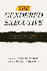

 <!DOCTYPE HTML PUBLIC "-//W3C//DTD HTML 4.0 Transitional//EN">
<html><!-- InstanceBegin template="/Templates/subjects.dwt" codeOutsideHTMLIsLocked="false" -->
<head>
<!-- InstanceBeginEditable name="doctitle" --> 
<title>Political Science &amp; Public Policy</title>
<!-- InstanceEndEditable --> 
<link rel="stylesheet" href="style.css" type="text/css">
<!-- InstanceBeginEditable name="head" --><!-- InstanceEndEditable --> <!-- InstanceParam name="Our Books" type="URL" value="img/our_books.gif" -->
</head>
<!-- Site designed by D a w n  D a n i s h, Copyright 2005 Temple University.  All Rights Reserved. -->
<body bgcolor="#FFFFFF" leftMargin="0" topMargin="0" rightMargin="0">
<!-- top banner table -->
<table width="100%" border="0" cellpadding="0" cellspacing="0">
  <tr> 
    <td valign="top" align="left" width="100%" nowrap><a name="top"></a><!-- InstanceBeginEditable name="header" --><!-- InstanceEndEditable --></td>
  </tr>
  <!-- navigation -->
  <tr> 
    <td bgcolor="#990033"></td>
  </tr>
  <tr> 
    <td bgcolor="#E5DCCB"></td>
  </tr>
  <tr> 
    <td align="center" valign="top" nowrap bgcolor="3D607A"><span class="navigation"><a class="navigation" href="index.html" TITLE="Welcome to Temple University Press">Home</a> 
      | <a class="navigation" href="books.html" TITLE="Browse our catalog or search for a book">Our 
      Books</a> | <a class="navigation" href="contact.html" TITLE="Questions? Comments? Tell us!">Contact 
      Us</a> | <a class="navigation" href="order.html" TITLE="Online ordering or order by phone, fax, or mail">Place 
      an Order</a> | <a class="navigation" href="br.html" TITLE="Book Reviews">Media</a> 
      | <a class="navigation" href="press.html" TITLE="Meet the Press">Press 
      Info</a> | <a class="navigation" href="links.html" TITLE="Other university press resources">Links</a> 
      </span></td>
  </tr>
  <tr> 
    <td bgcolor="#3D607A"></td>
  </tr>
  <tr> 
    <td bgcolor="#333333"></td>
  </tr>
</table>
<table border="0" cellspacing="0" cellpadding="0" width="100%">
  <!--DWLayoutTable-->
    <tr valign="top"> 
      <td width="200" align="left" valign="top" bgcolor="#E5DCCB"> 
        <!-- left menu -->
         <table border="0" cellspacing="0" cellpadding="5" width="100%">
          <tr valign="top"> 
            <td valign="top" align="left"><p class="leftnav"><a href="awards.html" TITLE="Read about award-winning books"> 
              Award-Winning Books</a><p class="leftnav">
                <a href="subjects.html" TITLE="Over 30 subject categories to browse">Subject 
                Index</a><p class="leftnav">
                <a href="series.html" TITLE="Books in series">Series 
                Listing</a><p class="leftnav">
                <a href="studyguides/index.html" TITLE="For further study">Study 
                Guides</a><br>&nbsp;</td>
          </tr>
        </table></td>      
    <td valign="top" align="left" width="100%"> 
      <!-- InstanceBeginEditable name="content table" --> 
      <table border="0" cellspacing="0" cellpadding="12" width="100%">
        <!--DWLayoutTable-->
        <tr> 
          <td width="75" valign="top" align="right"><a href="titles/825_reg.html"></a></td>
          <td valign="top" align="left"><a href="titles/825_reg.html"><b>Who 
            Cares for the Elderly?<br>
            </b>Public Policy and the Experiences of Adult Daughters</a><br>
            Abel, Emily K. <p class="small">248 pp &#149; 6x9 &#149; Spring 
              1991<br>
              paper  978-0-87722-950-6<br>
              cloth  978-0-87722-814-1<br>
               </p></td>
        </tr>
        <tr> 
          <td width="75" valign="top" align="right"><a href="titles/565_reg.html"></a></td>
          <td valign="top" align="left"><a href="titles/565_reg.html"><b>Doing 
            Comparable Worth<br>
            </b>Gender, Class, and Pay Equity</a><br>
            Acker, Joan m
            <p class="small">272 pp &#149; 6x9 &#149; Fall 
              1989<br>
              paper  978-0-87722-834-9<br>
              cloth  978-0-87722-621-5</p></td>
        </tr>
        <tr> 
          <td width="75" valign="top" align="right"><a href="titles/1392_reg.html"></a></td>
          <td valign="top" align="left"><a href="titles/1392_reg.html"><b>The 
            Global Emergence of Gay and Lesbian Politics<br>
            </b>National Imprints of a Worldwide Movement</a><br>
            edited by Adam, Barry D, Jan Willem Duyvendak and André Krouwel 
            <p class="small">448 pp &#149; 6x9 &#149; Fall 1998<br>
              paper  978-1-56639-645-5<br>
              cloth  978-1-56639-644-8<br>
               </p></td>
        </tr>
        <tr> 
          <td width="75" valign="top" align="right"><a href="titles/1813_reg.html"></a></td>
          <td valign="top" align="left"><a href="titles/1813_reg.html"><b>Seeking 
            Mandela<br>
            </b>Peacemaking Between Israelis and Palestinians</a><br>
            Adam, Heribert and Kogila Moodley <p class="small">248 pp &#149; 
              6x9 &#149; Spring 2005<br>
              paper  978-1-59213-396-3<br>
              cloth  978-1-59213-395-6<br>
                </p></td>
        </tr>
        <tr> 
          <td width="75" valign="top" align="right"><p class="normal"><a href="titles/1883_reg.html"></a></td>
          <td valign="top" align="left"><p class="normal"><a href="titles/1883_reg.html"><b>Citizen 
              Lobbyists<br>
              </b>Local Efforts to Influence Public Policy<br>
              </a>Adams, Brian </p>
            <p><span class="small">248 pp &#149; 5.5x8.25 &#149; Fall 2006<br>
              paper  978-1-59213-570-7<br>
			  cloth  978-1-59213-569-1</span></p>
			</td>
        </tr>
		<tr>
                <td width="75" valign="top" align="right"><a href="titles/712a_reg.html"></a></td>
          <td valign="top" align="left"><a href="titles/712a_reg.html"><font size="2" face="Verdana, Arial, Helvetica, sans-serif"><b>Restructuring the Philadelphia Region<br>
            </b>Metropolitan Divisions and Inequality</font></a><br>
                  <font size="2" face="Verdana, Arial, Helvetica, sans-serif">Adams, Carolyn, David W. Bartelt, David Elesh and Ira Goldstein with Michelle Schmitt and Joshua Freely</font>
                  <p class="small">248 pp &#149; 6x9 &#149; Fall 2008 <br>
                    paper  978-1-59213-897-5<br>
                    cloth  978-1-59213-896-8<br>
               </p></td>
        </tr>
        <tr> 
          <td width="75" valign="top" align="right"><a href="titles/1680_reg.html"></a></td>
          <td valign="top" align="left"><a href="titles/1680_reg.html"><b>Hegemony<br>
            </b>The New Shape of Global Power</a><br>
            Agnew, John <p class="small">296 pp &#149; 6x9 &#149; Spring 
              2005<br>
              paper 978-1-59213-153-2<br>
              cloth  978-1-59213-152-5<br>
               </p></td>
        </tr>
        <tr> 
          <td width="75" valign="top" align="right"><a href="titles/133_reg.html"></a></td>
          <td valign="top" align="left"><a href="titles/133_reg.html"><b>Marxism 
            in Latin America</b></a><br>
            edited by Aguilar, Luis E. <p class="small">412 pp &#149; 4x7 
              &#149; Spring 1978<br>
              paper  978-0-87722-108-1<br>
              cloth  978-0-87722-106-7<br>
               </p></td>
        </tr>
        <tr> 
          <td width="75" valign="top" align="right"><a href="titles/1625_reg.html"></a></td>
          <td valign="top" align="left"><a href="titles/1625_reg.html"><b>The 
            Nazi Census<br>
            </b>Identification and Control in the Third Reich</a><br>
            Aly, Götz and Karl Heinz Roth, foreword by Edwin Black, translated 
            by Assenka Oksiloff <p class="small">192 pp &#149; 5.5x8.25 
              &#149; Spring 2004<br>
              paper  978-1-59213-259-1<br>
              cloth  978-1-59213-199-0<br>
               </p></td>
        </tr>
        <tr> 
          <td width="75" valign="top" align="right"><a href="titles/1119_reg.html"></a></td>
          <td valign="top" align="left"><a href="titles/1119_reg.html"><b>The 
            Union Inspiration in American Politics<br>
            </b>The Autoworkers and the Making of a Liberal Industrial Order</a><br>
            Amberg, Stephen <p class="small">368 pp &#149; 6x9 &#149; Fall 
              1994<br>
              cloth  978-1-56639-189-4<br>
               </p></td>
        </tr>
              <tr> 
                <td width="75" valign="top" align="right"><a href="titles/2131_reg.html"></a></td>
                <td valign="top" align="left"><a href="titles/2131_reg.html"><font size="2" face="Verdana, Arial, Helvetica, sans-serif"><b>Sport and Neoliberalism<br></b>
               Politics, Consumption, and Culture</font></a><br> 
                  <font size="2" face="Verdana, Arial, Helvetica, sans-serif">edited by Andrews, David L., and Michael L. Silk
</font> <p class="small">322 pp &#149; 6x9 &#149; Fall 2012<br>
                 paper  978-1-4399-0504-3<br>
                cloth  978-1-4399-0503-6<br>
                     </p></td>
              </tr>
        <tr> 
          <td width="75" valign="top" align="right"><a href="titles/616_reg.html"></a></td>
          <td valign="top" align="left"><a href="titles/616_reg.html"><b>American 
            Federalism and Public Policy<br>
            </b>How the System Works</a><br>
            Anton, Thomas <p class="small">320 pp &#149; 6x9 &#149; Fall 
              1988<br>
              cloth  978-0-87722-577-5<br>
               </p></td>
        </tr>
        <tr> 
          <td width="75" valign="top" align="right"><br> &nbsp;</td>
          <td valign="top" align="left"><a href="titles/116_reg.html"><b>Genocide 
            in Paraguay</b></a><br>
            edited by Arens, Richard <p class="small">224 pp &#149; Fall 
              1977<br>
              cloth  978-0-87722-088-6</p></td>
        </tr>
        <tr> 
          <td width="75" valign="top" align="right"><a href="titles/635_reg.html"></a></td>
          <td valign="top" align="left"><a href="titles/635_reg.html"><b>The 
            Unfulfilled Promise<br>
            </b>Public Subsidy of the Arts in America</a><br>
            Arian, Edward <p class="small">120 pp &#149; Spring 1989<br>
              paper  978-1-56639-083-5<br>
              cloth  978-0-87722-612-3</p></td>
        </tr>
              <tr> 
                <td width="75" valign="top" align="right"><a href="titles/2248_reg.html"></a></td>
                
          <td valign="top" align="left"><a href="titles/2248_reg.html"><font size="2" face="Verdana, Arial, Helvetica, sans-serif"><b>Speaking of Race and Class<br>
            </b>The Student Experience at an Elite College</font></a><br> 
            <font size="2" face="Verdana, Arial, Helvetica, sans-serif">Aries, Elizabeth, with Richard Berman</font> <p class="small">238 pp &#149; 6x9 &#149; Fall 
                    2012<br>
                    paper  978-1-4399-0967-6<br>
                    cloth  978-1-4399-0966-9</p></td>
              </tr>
        <tr> 
          <td width="75" valign="top" align="right"><a href="titles/371_reg.html"></a></td>
          <td valign="top" align="left"><a href="titles/371_reg.html"><b>Monopoly's 
            Moment<br>
            </b>The Organization and Regulation of Canadian Utilities, 1830-1930</a><br>
            Armstrong, Christopher and H. V. Nelles <p class="small">384 
              pp &#149; Spring 1986<br>
              cloth  978-0-87722-404-4</p></td>
        </tr>
        <tr> 
          <td width="75" valign="top" align="right"><a href="titles/1771_reg.html"></a></td>
          <td valign="top" align="left"><a href="titles/1771_reg.html"><b>Just 
            Around the Corner<br>
            </b>The Paradox of the Jobless Recovery</a><br>
            Aronowitz, Stanley <p class="small">176 pp &#149; 5.5x8.25 
              &#149; Spring 2005<br>
              paper  978-1-59213-138-9<br>
              cloth  978-1-59213-137-2<br>
               </p></td>
        </tr>
        <tr> 
          <td width="75" valign="top" align="right"><a href="titles/195_reg.html"></a></td>
          <td valign="top" align="left"><a href="titles/195_reg.html"><b>Policy 
            and Politics in Britain<br>
            </b>The Limits of Consensus</a><br>
            Ashford, Douglas E. <p class="small">330 pp &#149; 5x8 &#149; 
              Fall 1980<br>
              paper  978-0-87722-195-1<br>
              cloth  978-0-87722-194-4<br>
               </p></td>
        </tr>
        <tr> 
          <td width="75" valign="top" align="right"><a href="titles/299_reg.html"></a></td>
          <td valign="top" align="left"><a href="titles/299_reg.html"><b>Policy 
            and Politics in France<br>
            </b>Living with Uncertainty</a><br>
            Ashford, Douglas E. <p class="small">345 pp &#149; 5x8 &#149; 
              Fall 1982<br>
              paper  978-0-87722-262-0<br>
              cloth  978-0-87722-261-3<br>
               </p></td>
        </tr>
		<tr>
                <td width="75" valign="top" align="right"><a href="titles/549a_reg.html"></a></td>
                <td valign="top" align="left"><a href="titles/549a_reg.html"><font size="2" face="Verdana, Arial, Helvetica, sans-serif"><b>A 
                  Moral Military</b><br>
                  Revised and Expanded Edition</font></a><br>
                  <font size="2" face="Verdana, Arial, Helvetica, sans-serif">Axinn, 
                  Sidney</font>
                  <p class="small">256 pp &#149; 6x9 &#149; Fall 2008 <br>
                    paper  978-1-59213-958-3<br>
                    cloth  978-1-59213-957-6<br>
               </p></td>
        </tr>
        <tr> 
          <td width="75" valign="top" align="right"><a href="titles/477_reg.html"></a></td>
          <td valign="top" align="left"><a href="titles/477_reg.html"><b>Power 
            and Empowerment<br>
            </b>A Radical Theory of Participatory Democracy</a><br>
            Bachrach, Peter and Aryeh Botwinick <p class="small">216 pp 
              &#149; 5.5x8.25 &#149; Spring 1992<br>
              paper  978-0-87722-939-1<br>
              cloth  978-0-87722-930-8</p></td>
        </tr>
		   <tr> 
          <td width="75" valign="top" align="right"><p class="normal"><a href="titles/2152_reg.html"></a></td>
          <td valign="top" align="left"><p class="normal"><a href="titles/2152_reg.html"><b>The Borders of Justice</b></a><br>
              </a>edited by Balibar, Étienne, Sandro Mezzadra and Ranabir Samaddar</p>
            <p class="small">224 pp &#149; 6x9 &#149; Fall 2011<br>
                    paper 978-1-4399-0686-6<br>
			cloth  978-1-4399-0685-9<br>
               </p></td>
        </tr>
        <tr> 
          <td width="75" valign="top" align="right"><a href="titles/266_reg.html"></a></td>
          <td valign="top" align="left"><a href="titles/266_reg.html"><b>Going 
            by the Book<br>
            </b>The Problem of Regulatory Unreasonableness</a><br>
            Bardach, Eugene and Robert A. Kagan <p class="small">350 pp 
              &#149; Spring 1982<br>
              paper  978-0-87722-252-1<br>
              cloth  978-0-87722-251-4</p></td>
        </tr>
        <tr> 
          <td width="75" valign="top" align="right"><a href="titles/1808_reg.html"></a></td>
          <td valign="top" align="left"><a href="titles/1808_reg.html"><b>At 
            a Loss for Words<br>
            </b>How America Is Failing Our Children and What We Can Do about It</a><br>
            Bardige, Betty, foreword by T. Berry Brazelton, M.D. <p class="small">272 
              pp &#149; 6x9 &#149; Spring 2005<br>
              paper  978-1-59213-393-2<br>
              cloth  978-1-59213-392-5<br>
                </p></td>
        </tr>
		<tr> 
          <td width="75" valign="top" align="right"><p class="normal"><a href="titles/2026_reg.html"></a></td>
          <td valign="top" align="left"><p class="normal"><a href="titles/2026_reg.html"><b>Criminology and Public Policy</b><br>
              Putting Theory to Work</a><br>Barlow, Hugh and Scott Decker</p>
			<p class="small"> 
			306 pp &#149; 6x9 &#149; Fall 2009<br>
			paper  978-1-4399-0007-9<br>
           cloth  978-1-4399-0006-2<br>
               </p></td>
        </tr>
              <tr>
                <td width="75" valign="top" align="right"><a href="titles/2232_reg.html"></a></td>
          <td valign="top" align="left"><a href="titles/2232_reg.html"><font size="2" face="Verdana, Arial, Helvetica, sans-serif"><b>Atlanta Unbound<br>
            </b>Enabling Sprawl through Policy and Planning</font></a><br>
                  <font size="2" face="Verdana, Arial, Helvetica, sans-serif">Basmajian, Carlton Wade</font>
                  <p class="small">288 pp &#149; 7x10 &#149; Fall 2013<br>
                          paper  978-1-4399-0940-9<br>
    cloth  978-1-4399-0939-3</p></td>
              </tr>
        <tr> 
          <td width="75" valign="top" align="right"><a href="titles/556_reg.html"></a></td>
          <td valign="top" align="left"><a href="titles/556_reg.html"><b>The 
            Health of the Republic<br>
            </b>Epidemics, Medicine, and Moralism as Challenges to Democracy</a><br>
            Beauchamp, Dan E. <p class="small">312 pp &#149; Fall 1988<br>
              paper  978-0-87722-729-8<br>
              cloth  978-0-87722-558-4</p></td>
        </tr>
        <tr> 
          <td width="75" valign="top" align="right"><a href="titles/1238_reg.html"></a></td>
          <td valign="top" align="left"><a href="titles/1238_reg.html"><b>Health 
            Care Reform and the Battle for the Body Politic</b></a><br>
            Beauchamp, Dan E. <p class="small">224 pp &#149; 5.5x8.25 &#149; 
              Spring 1996<br>
              paper  978-1-56639-414-7<br>
              cloth  978-1-56639-413-0<br>
               </p></td>
        </tr>
		<tr> 
          <td width="75" valign="top" align="right"><p class="normal"><a href="titles/1892_reg.html"></a></td>
          <td valign="top" align="left"><p class="normal"><a href="titles/1892_reg.html"><b>Dewey's Dream<br>
              </b>Universities and Democracies in an Age of Education Reform<br>
              </a>Benson, Lee, Ira Harkavy, and John Puckett</p>
			<p class="small"> 168 pp &#149; 5.5x8.25 &#149; Spring 2007<br>
            paper  978-1-59213-592-9<br>
			cloth  978-1-59213-591-2<br>
               </p></td>
        </tr>
        <tr> 
          <td width="75" valign="top" align="right"><br> &nbsp;</td>
          <td valign="top" align="left"><a href="titles/531_reg.html"><b>Measuring 
            the Efficiency of Public Programs<br>
            </b>Costs and Benefits in Vocational Rehabilitation</a><br>
            edited by Berkowitz, Monroe <p class="small">256 pp &#149; 
              Spring 1988<br>
              cloth  978-0-87722-527-0</p></td>
        </tr>
        <tr> 
          <td width="75" valign="top" align="right"><a href="titles/768_reg.html"></a></td>
          <td valign="top" align="left"><a href="titles/768_reg.html"><b>Managing 
            Contracted Services in the Nonprofit Agency<br>
            </b>Administrative, Ethical, and Political Issues</a><br>
            Bernstein, Susan R., foreword by Roger A. Lohmann <p class="small">230 
              pp &#149; 6x9 &#149; Spring 1991<br>
              paper  978-0-87722-809-7<br>
              cloth  978-0-87722-808-0<br>
               </p></td>
        </tr>
        <tr> 
          <td width="75" valign="top" align="right"><a href="titles/517_reg.html"></a></td>
          <td valign="top" align="left"><a href="titles/517_reg.html"><b>Liberation 
            Theology<br>
            </b>Essential Facts about the Revolutionary Religious Movement in 
            Latin America and Beyond</a><br>
            Berryman, Phillip <p class="small">240 pp &#149; 5x8 &#149; 
              Spring 1987<br>
              cloth  978-0-87722-479-2</p></td>
        </tr>
        <tr> 
          <td width="75" valign="top" align="right"><a href="titles/392_reg.html"></a></td>
          <td valign="top" align="left"><a href="titles/392_reg.html"><b>Pathways 
            from Heroin Addiction<br>
            </b>Recovery Without Treatment</a><br>
            Biernacki, Patrick <p class="small">268 pp &#149; Spring 1986<br>
              cloth 978-0-87722-410-5</p></td>
        </tr>
		 <tr> 
          <td width="75" valign="top" align="right"><p class="normal"><a href="titles/1996_reg.html"></a></td>
          <td valign="top" align="left"><p class="normal"><a href="titles/1996_reg.html"><b>Tyranny of the Minority</b><br>
		 The Subconstituency Politics Theory of Representation</a><br>
              </a>Bishin, Benjamin  </p>
			<p class="small"> 216 pp &#149; 6x9 &#149; Spring 2010<br>
            paper  978-1-59213-659-9<br>
			cloth  978-1-59213-658-2<br>
               
           </p></td>
        </tr>
        <tr> 
          <td width="75" valign="top" align="right"><a href="titles/901_reg.html"></a></td>
          <td valign="top" align="left"><a href="titles/901_reg.html"><b>Gay 
            and Lesbian Politics<br>
            </b>Sexuality and the Emergence of a New Ethic</a><br>
            Blasius, Mark <p class="small">240 pp &#149; 5.5x8.25 &#149; 
              Fall 1994<br>
              paper  978-1-56639-174-0<br>
              cloth  978-1-56639-173-3</p></td>
        </tr>
        <tr> 
          <td width="75" valign="top" align="right"><a href="titles/452_reg.html"></a></td>
          <td valign="top" align="left"><a href="titles/452_reg.html"><b>Revising 
            State Theory<br>
            </b>Essays in Politics and Postindustrialism</a><br>
            Block, Fred <p class="small">256 pp &#149; Fall 1987<br>
              paper  978-0-87722-524-9<br>
              cloth  978-0-87722-465-5<br>
               
        </tr>
        <tr> 
          <td width="75" valign="top" align="right"><a href="titles/438_reg.html"></a></td>
          <td valign="top" align="left"><a href="titles/438_reg.html"><b>Social 
            Movements and Political Power<br>
            </b>Emerging Forms of Radicalism in the West</a><br>
            Boggs, Carl <p class="small">304 pp &#149; 6x9 &#149; Fall 
              1986<br>
              paper  978-0-87722-622-2<br>
              cloth  978-0-87722-447-1<br>
               </p></td>
        </tr>
        <tr> 
          <td width="75" valign="top" align="right"><a href="titles/475_reg.html"></a></td>
          <td valign="top" align="left"><a href="titles/475_reg.html"><b>Women 
            and the Politics of Empowerment</b></a><br>
            edited by Bookman, Ann and Sandra Morgen 
            <p class="small">352 
              pp &#149; Fall 1987<br>
              paper  978-0-87722-525-6<br>
              cloth  978-0-87722-504-1<br>
               </p></td>
        </tr>
		<tr> 
          <td width="75" valign="top" align="right"><p class="normal"><a href="titles/2069_reg.html"></a></td>
          <td valign="top" align="left"><p class="normal"><a href="titles/2069_reg.html"><b>Cleavage Politics and the Populist Right<br>
              </b>The New Cultural Conflict in Western Europe</a><br>
			  Bornschier, Simon</p>
			<p class="small"> 260 pp &#149; 6x9 &#149; Spring 2010<br>
             cloth  978-1-4399-0192-2<br>
               
        </tr>
        <tr>
                <td width="75" valign="top" align="right"><a href="titles/2213_reg.html"></a></td>
                
          <td valign="top" align="left"><a href="titles/2213_reg.html"><font size="2" face="Verdana, Arial, Helvetica, sans-serif"><b>Suspect Citizens<br>
            </b>Women, Virtue, and Vice in Backlash Politics</font></a><br>
                  <font size="2" face="Verdana, Arial, Helvetica, sans-serif">Boryczka, Jocelyn M. </font>
                  <p class="small">216 pp &#149; 5.5x8.25 &#149; Fall 2012<br>
                    paper  978-1-4399-0894-5<br>
                    cloth  978-1-4399-0893-8<br>
                     </p></td>
        </tr> 
        <tr> 
          <td width="75" valign="top" align="right"><a href="titles/1305_reg.html"></a></td>
          <td valign="top" align="left"><a href="titles/1305_reg.html"><b>Women 
            in 1900<br>
            </b>Gateway to the Political Economy of the 20th Century</a><br>
            Bose, Christine E. <p class="small">272 pp &#149; 5x8 &#149; 
              Fall 2000<br>
              paper  978-1-56639-838-1<br>
              cloth  978-1-56639-837-4<br>
               </p></td>
        </tr>
        <tr> 
          <td width="75" valign="top" align="right"><a href="titles/1018_reg.html"></a></td>
          <td valign="top" align="left"><a href="titles/1018_reg.html"><b>Postmodernism 
            and Democratic Theory</b></a><br>
            Botwinick, Aryeh <p class="small">288 pp &#149; 6x9 &#149; 
              Spring 1993<br>
              cloth  978-0-87722-997-1</p></td>
        </tr>
        <tr> 
          <td width="75" valign="top" align="right"><a href="titles/592_reg.html"></a></td>
          <td valign="top" align="left"><a href="titles/592_reg.html"><b>Skepticism 
            and Political Participation</b></a><br>
            Botwinick, Aryeh <p class="small">256 pp &#149; Fall 1989<br>
              cloth  978-0-87722-657-4</p></td>
        </tr>
        <tr> 
          <td width="75" valign="top" align="right"><a href="titles/149_reg.html"></a></td>
          <td valign="top" align="left"><a href="titles/149_reg.html"><b>Ethical 
            Issues in Government</b></a><br>
            edited by Bowie, Norman E. <p class="small">325 pp &#149; Spring 
              1981<br>
              cloth  978-0-87722-165-4</p></td>
        </tr>
        <tr> 
          <td width="75" valign="top" align="right"><a href="titles/1278_reg.html"></a></td>
          <td valign="top" align="left"><a href="titles/1278_reg.html"><b>Building 
            America<br>
            </b>The Democratic Promise of Public Work</a><br>
            Boyte, Harry C. and Nancy N. Kari <p class="small">272 pp &#149; 
              5.5x8.25 &#149; Spring 1996<br>
              paper  978-1-56639-458-1<br>
              cloth  978-1-56639-457-4</p></td>
        </tr>
        <tr> 
          <td width="75" valign="top" align="right"><a href="titles/393_reg.html"></a></td>
          <td valign="top" align="left"><a href="titles/393_reg.html"><b>The 
            New Populism<br>
            </b>The Politics of Empowerment</a><br>
            edited by Boyte, Harry C. and Frank Riessman <p class="small">336 
              pp &#149; Fall 1986<br>
              paper  978-0-87722-449-5<br>
              cloth  978-0-87722-429-7</p></td>
        </tr>
              <tr>
                <td width="75" valign="top" align="right"><a href="titles/2321_reg.html"></a></td>
                
          <td valign="top" align="left"><a href="titles/2321_reg.html"><font size="2" face="Verdana, Arial, Helvetica, sans-serif"><b>Senior Power or Senior Peril<br>
            </b>Aged Communities and American Society in the Twenty-First Century</font></a><br>
            <font size="2" face="Verdana, Arial, Helvetica, sans-serif">Bramlett, Brittany H.</font> <p class="small">168 
              pp &#149; 5.5x8.250 &#149; Fall 2014<br>
              paper  978-1-43991-134-1<br>
              cloth  978-1-43991-133-4</p></td>
              </tr>
        <tr> 
          <td width="75" valign="top" align="right"><a href="titles/1301_reg.html"></a></td>
          <td valign="top" align="left"><a href="titles/1301_reg.html"><b>A 
            Right to Housing<br>
            </b> Foundation for a New Social Agenda</a><br>
            edited by Bratt, Rachel G., Michael E. Stone and Chester Hartman 
            <p class="small">448 pp &#149; 7x10 &#149; Fall 2005<br>
              paper  978-1-59213-432-8<br>
              cloth  978-1-59213-431-1<br>
                </p></td>
        </tr>
        <tr> 
          <td width="75" valign="top" align="right"><a href="titles/383_reg.html"></a></td>
          <td valign="top" align="left"><a href="titles/383_reg.html"><b>Critical 
            Perspectives on Housing</b></a><br>
            edited by Bratt, Rachel G., Chester Hartman and Ann Meyerson 
            <p class="small">600 pp &#149; Fall 1985<br>
              paper  978-0-87722-396-2<br>
              cloth  978-0-87722-395-5</p></td>
        </tr>
        <tr> 
          <td width="75" valign="top" align="right"><a href="titles/1568_reg.html"></a></td>
          <td valign="top" align="left"><a href="titles/1568_reg.html"><b>Democratic 
            Theorizing from the Margins</b></a><br>
            Brettschneider, Marla <p class="small">272 pp &#149; 6x9 &#149; 
              Fall 2001<br>
			  paper  978-1-59213-654-4<br>
              cloth  978-1-56639-921-0<br>
               </p></td>
        </tr>
        <tr> 
          <td width="75" valign="top" align="right"><a href="titles/506_reg.html"></a></td>
          <td valign="top" align="left"><a href="titles/506_reg.html"><b>The 
            Cult of the Court</b></a><br>
            Brigham, John <p class="small">280 pp &#149; Fall 1987<br>
              paper  978-0-87722-828-8<br>
              cloth  978-0-87722-486-0<br>
               </p></td>
        </tr>
		<tr> 
          <td width="75" valign="top" align="right"><p class="normal"><a href="titles/2010_reg.html"></a></td>
          <td valign="top" align="left"><p class="normal"><a href="titles/2010_reg.html"><b>Material Law<br>
              </b>A Jurisprudence of What's Real<br></a>Brigham, John</p>
            <p class="small">240 pp &#149; 6x9 &#149; Spring 2009<br>
              cloth  978-1-59213-964-4<br>
               </p></td>
        </tr>
        <tr> 
          <td width="75" valign="top" align="right"><a href="titles/720_reg.html"></a></td>
          <td valign="top" align="left"><a href="titles/720_reg.html"><b>Property 
            and the Politics of Entitlement</b></a><br>
            Brigham, John <p class="small">240 pp &#149; Fall 1990<br>
              cloth  978-0-87722-715-1</p></td>
        </tr>
              <tr>
                <td width="75" valign="top" align="right"><a href="titles/2103_reg.html"></a></td>
          <td valign="top" align="left"><a href="titles/2103_reg.html"><font size="2" face="Verdana, Arial, Helvetica, sans-serif"><b>As French As Everyone Else?<br>
            </b>A Survey of French Citizens of Maghrebin, African, and Turkish Origin</font></a><br>
            <font size="2" face="Verdana, Arial, Helvetica, sans-serif">Brouard, Sylvain and Vincent Tiberj<br>
            Foreword by Pascal Perrineau, Translated by Jennifer Fredette</font>
                  <p class="small">152 pp &bull; 5.5x8.25 &bull; Spring 2011<BR>
                    paper  978-1-4399-0296-7<BR>
cloth  978-1-4399-0295-0<br>
               </p></td>
              </tr>
              <tr>
                <td width="75" valign="top" align="right"><a href="titles/2268_reg.html"></a></td>
                <td valign="top" align="left"><a href="titles/2268_reg.html"><font size="2" face="Verdana, Arial, Helvetica, sans-serif"><b>The Concept of the Social in Uniting the Humanities and Social Sciences</b></font></a><br>
                  <font size="2" face="Verdana, Arial, Helvetica, sans-serif">Brown, Michael E. </font>
                  <p class="small">538 pp &#149; 6x9 &#149; Spring 2014<br>
              paper  978-1-4399-1016-0<br>
                    cloth  978-1-43991-015-3<BR>
                </p></td>
              </tr>
			  <tr>
		<tr>
                <td width="75" valign="top" align="right"><a href="titles/1997_reg.html"></a></td>
          <td valign="top" align="left"><a href="titles/1997_reg.html"><font size="2" face="Verdana, Arial, Helvetica, sans-serif"><b>The Historiography of Communism</b></font></a><br>
                  <font size="2" face="Verdana, Arial, Helvetica, sans-serif">Brown, Michael E.</font>
                  <p class="small">264 pp &#149; 6x9 &#149; Fall 2008<br>
                    paper  978-1-59213-922-4<br>
					cloth  978-1-59213-921-7<br>
               </p></td>
        </tr>
        <tr> 
          <td width="75" valign="top" align="right"><a href="titles/553_reg.html"></a></td>
          <td valign="top" align="left"><a href="titles/553_reg.html"><b>Remaking 
            the Welfare State<br>
            </b>Retrenchment and Social Policy in America and Europe</a><br>
            edited by Brown, Michael K. <p class="small">320 pp &#149; 
              Spring 1988<br>
              cloth  978-0-87722-541-6</p></td>
        </tr>
        <tr> 
          <td width="75" valign="top" align="right"><br> &nbsp;</td>
          <td valign="top" align="left"><a href="titles/502_reg.html"><b>Beyond 
            the Market and the State<br>
            </b>New Directions in Community Development</a><br>
            edited by Bruyn, Severyn T. and James Meehan <p class="small">272 
              pp &#149; Fall 1987<br>
              cloth  978-0-87722-484-6</p></td>
        </tr>
        <tr> 
          <td width="75" valign="top" align="right"><p class="normal"><a href="titles/2214_reg.html"></a></td>
          <td valign="top" align="left"><p class="normal"><a href="titles/2214_reg.html"><b>Sustainable Failures<br>
              </b>Environmental Policy and Democracy in a Petro-dependent World<br>
              </a> Cable, Sherry</p>
            <p class="small">242 pp &#149; 6x9 &#149; Fall 2012<br>
			paper  978-1-43990-900-3<br>
              cloth  978-1-43990-899-0<br>
                     </p></td>
        </tr>
              <tr>
                <td width="75" valign="top" align="right"><a href="titles/2146_reg.html"></a></td>
                <td valign="top" align="left"><a href="titles/2146_reg.html"><font size="2" face="Verdana, Arial, Helvetica, sans-serif"><b>Moral Problems in Higher Education</b></font></a><br>
                  <font size="2" face="Verdana, Arial, Helvetica, sans-serif">edited by Cahn, Steven M.</font>
                  <p class="small">264 pp &bull; 6x9 &bull; Spring 2011<BR>
                    paper  978-1-4399-0659-0<BR>
                  cloth  978-1-4399-0658-3<br>
               </p></td>
              </tr>
        <tr> 
          <td width="75" valign="top" align="right"><br> &nbsp;</td>
          <td valign="top" align="left"><a href="titles/280_reg.html"><b>Special 
            Education Policies<br>
            </b>Their History, Implementation, and Finance</a><br>
            Chambers, Jay G. and William T. Hartman <p class="small">301 
              pp &#149; Fall 1982<br>
              cloth  978-0-87722-280-4</p></td>
        </tr>
        <tr> 
          <td width="75" valign="top" align="right"><a href="titles/1838_reg.html"></a></td>
          <td valign="top" align="left"><a href="titles/1838_reg.html"><b>Mayors 
            and Schools<br>
            </b>Minority Voices and Democratic Tensions in Urban Education</a><br>
            Chambers, Stefanie 
            <p class="small">240 pp &#8226; 5.5x8.25 &#8226; Spring 2006<br>
              paper  978-1-59213-469-4<br>
			  cloth  978-1-59213-468-7<br>
                </p></td>
        </tr>
        
        <tr>
                <td width="75" valign="top" align="right"><a href="titles/2444_reg.html"></a></td>
                <td valign="top" align="left"><a href="titles/2444_reg.html">
                <strong>The Politics of New Immigrant Destinations<br>
                </strong> Transatlantic Perspectives</font></a><br>
edited by Chambers, Stefanie, Diana Evans, Anthony M. Messina, and Abigail Fisher Williamson
<p class="small">348 pp &#149; 6x9 &#149; Spring 2017<br>
                    paper 978-1-4399-1463-2
					<br>
                    cloth 978-1-4399-1462-5<BR>
                </p></td>
              </tr>
        <tr>
                <td width="75" valign="top" align="right"><a href="titles/2435_reg.html"></a></td>
                <td valign="top" align="left"><a href="titles/2435_reg.html"><strong>
                Somalis in the Twin Cities and Columbus<br>
                </strong> Immigrant Incorporation in New Destination</font></a><br>
Chambers, Stefanie
<p class="small">250 pp &#149; 5.5x8.25 &#149; Spring 2017<br>
                    paper 978-1-4399-1442-7
					<br>
                    cloth 978-1-4399-1441-0<BR>
                </p></td>
              </tr>
              <tr>
           <td width="75" valign="top" align="right"><span class="normal"><a href="titles/2458_reg.html"></a></span></td>
                <td valign="top" align="left"><a href="titles/2458_reg.html"><font size="2" face="Verdana, Arial, Helvetica, sans-serif"><b>Rulers and Capital in Historical Perspective<br>
				</b>State Formation and Financial Development in India and the United States</font></a><br>
                  <font size="2" face="Verdana, Arial, Helvetica, sans-serif">Chatterjee, Abhishek </font>
                  <p class="small">188 pp &bull; 5.5x8.25 &bull; Fall 2017<br>
                    cloth  978-1-4399-1500-4<br>
               </p></td>
        </tr>

        <tr> 
          <td width="75" valign="top" align="right"><a href="titles/522_reg.html"></a></td>
          <td valign="top" align="left"><a href="titles/522_reg.html"><b>More 
            Speech<br>
            </b> Dialogue Rights and Modern Liberty</a><br> Chevigny, Paul 
            <p class="small">228 pp &#149; Fall 1987<br>
              cloth  978-0-87722-514-0</p></td>
        </tr>
        <tr> 
          <td width="75" valign="top" align="right"><a href="titles/1562_reg.html"></a></td>
          <td valign="top" align="left"><a href="titles/1562_reg.html"><b>Transcommunality<br>
            </b>From the Politics of Conversion to the Ethics of Respect</a><br>
            Childs, John Brown <p class="small">256 pp &#149; 5.5x8.25 
              &#149; Fall 2002<br>
              paper  978-1-59213-005-4<br>
              cloth  978-1-59213-004-7<br>
               </p></td>
        </tr>
        <tr> 
          <td width="75" valign="top" align="right"><p class="normal"><a href="titles/1866_reg.html"></a></td>
          <td valign="top" align="left"><p class="normal"><a href="titles/1866_reg.html"><b>Multiethnic 
              Moments<br>
              </b>The Politics of Urban Education Reform<br>
              </a>Clarke, Susan E., Rodney E. Hero, Mara S. Sidney, Luis Fraga 
              and Bari Anhalt Erlichson, foreword by Clarence N. Stone</p>
            <p><span class="small">264 pp &#149; 6x9 &#149; Fall 2006<br>
              paper  978-1-59213-537-0<br>
			  cloth  978-1-59213-536-3</span></p>
			</td>
        </tr>
        <tr> 
          <td width="75" valign="top" align="right"><a href="titles/290_reg.html"></a></td>
          <td valign="top" align="left"><a href="titles/290_reg.html"><b>Opposition 
            Planning in Wales and Appalachia</b></a><br>
            Clavel, Pierre <p class="small">251 pp &#149; Fall 1982<br>
              cloth  978-0-87722-276-7</p></td>
        </tr>
        <tr> 
          <td width="75" valign="top" align="right"><a href="titles/1424_reg.html"></a></td>
          <td valign="top" align="left"><a href="titles/1424_reg.html"><b>Dollars 
            and Votes<br>
            </b>How Business Campaign Contributions Subvert Democracy</a><br>
            Clawson, Dan, Alan Neustadtl and Mark Weller <p class="small">256 
              pp &#149; 6x9 &#149; Spring 1998<br>
              paper  978-1-56639-626-4<br>
              cloth  978-1-56639-625-7<br>
               </p></td>
        </tr>
		   <tr>
                <td width="75" valign="top" align="right"><a href="titles/1995_reg.html"></a></td>
          <td valign="top" align="left"><a href="titles/1995_reg.html"><font size="2" face="Verdana, Arial, Helvetica, sans-serif"><b>Legacy and Legitimacy<br>
            </b>Black Americans and the Supreme Court</font></a><br>
                  <font size="2" face="Verdana, Arial, Helvetica, sans-serif">Clawson, Rosalee A. and Eric N. Waltenburg</font>
                  <p class="small">232 pp &#149; 5.5x8.25 &#149; Fall 2008 <br>
                    paper  978-1-59213-903-3<br>
                    cloth  978-1-59213-902-6<br>
               </p></td>
        </tr>
		<tr> 
          <td width="75" valign="top" align="right"><p class="normal"><a href="titles/1980_reg.html"></a></td>
          <td valign="top" align="left"><p class="normal"><a href="titles/1980_reg.html"><b>The Transnational Politics of Asian Americans<br>
              </b>Foreword by Don Nakanishi<br></a>edited by Collet, Christian, Pei-te Lien</p>
            <p class="small">252 pp &#149; 6x9 &#149; Spring 2009<br>
              paper  978-1-59213-861-6<br>
              cloth  978-1-59213-860-9<br>
               </p></td>
        </tr>
        <tr> 
          <td width="75" valign="top" align="right"><a href="titles/608A_reg.html"></a></td>
          <td valign="top" align="left"><a href="titles/608A_reg.html"><b>Bernie Sanders and the Boundaries of Reform<br>
            </b>Socialism in Burlington</a><br>
            Conroy, W. J. <br>
            With a new Preface by the Author
            <p class="small">278 pp &#149; 6x9 &#149; Spring 2017<br>
              paper  978-1-4399-1480-9</p></td>
        </tr>
        <tr> 
          <td width="75" valign="top" align="right"><br> &nbsp;</td>
          <td valign="top" align="left"><a href="titles/314_reg.html"><b>Women 
            and Trade Unions in Eleven Industrialized Countries</b></a><br>
            edited by Cook, Alice H., Val R. Lorwin and Arlene Kaplan Daniels 
            <p class="small">360 pp &#149; Fall 1983<br>
              cloth  978-0-87722-319-1</p></td>
        </tr>
        <tr> 
          <td width="75" valign="top" align="right"><p class="normal"><a href="titles/1730_reg.html"></a></td>
          <td valign="top" align="left"><p class="normal"><a href="titles/1730_reg.html"><b>Judging 
              Children as Children<br>
              </b>A Proposal for a Juvenile 
              Justice System</a><br>
              Corriero, Michael A. </p>
            <p class="small">232 pp &#149; 5.5x8.25 &#149; Spring 2008<br>
              paper 978-1-59213-169-3<br>
			  cloth  978-1-59213-168-6<br>
               </p></td>
        </tr>
        <tr>
                <td width="75" valign="top" align="right"><a href="titles/2399_reg.html"></a></td>
                
          <td valign="top" align="left"><a href="titles/2399_reg.html"><font size="2" face="Verdana, Arial, Helvetica, sans-serif"><b>A Nice Place to Visit</b><br> Tourism and Urban Revitalization in the Postwar Rustbelt</font></a><br>
                  <font size="2" face="Verdana, Arial, Helvetica, sans-serif">Cowan, Aaron</font>
                  <p class="small">236 pp &#149; 6x9  &#149; Spring 2016<br>
                    paper 978-1-4399-1346-8<br>cloth 978-1-4399-1345-1<br>
                   </p></td>
              </tr>
<tr> 
          <td width="75" valign="top" align="right"><a href="titles/1142_reg.html"></a></td>
          <td valign="top" align="left"><a href="titles/1142_reg.html"><b>Politics 
            and the Class Divide<br>
            </b>Working People and the Middle Class Left</a><br>
            Croteau, David <p class="small">320 pp &#149; 6x9 &#149; Fall 
              1994<br>
              paper  978-1-56639-255-6<br>
              cloth  978-1-56639-254-9<br>
               </p></td>
        </tr>
        <tr> 
          <td width="75" valign="top" align="right"><a href="titles/1298_reg.html"></a></td>
          <td valign="top" align="left"><a href="titles/1298_reg.html"><b>Identity 
            and Power<br>
            </b>Puerto Rican Politics and the Challenge of Ethnicity</a><br>
            Cruz, José E. <p class="small">296 pp &#149; 6x9 &#149; Spring 
              1998<br>
              paper  978-1-56639-605-9<br>
              cloth  978-1-56639-604-2<br>
               </p></td>
        </tr>
        <tr> 
          <td width="75" valign="top" align="right"><a href="titles/532_reg.html"></a></td>
          <td valign="top" align="left"><a href="titles/532_reg.html"><b>Freedom 
            at Risk<br>
            </b>Secrecy, Censorship, and Repression in the 1980s</a><br>
            edited by Curry, Richard O. <p class="small">448 pp &#149; 
              Fall 1988<br>
              paper  978-0-87722-660-4<br>
              cloth  978-0-87722-543-0</p></td>
        </tr>
         <tr> 
                <td width="75" valign="top" align="right"><a href="titles/2049_reg.html"></a></td>
                
          <td valign="top" align="left"><a href="titles/2049_reg.html"><font size="2" face="Verdana, Arial, Helvetica, sans-serif"><b>Self-Determination without Nationalism<br>
            </b>A Theory of Postnational Sovereignty</font></a><br> 
                  <font size="2" face="Verdana, Arial, Helvetica, sans-serif">Dahbour, Omar 
</font> <p class="small">272 pp &#149; 6x9 &#149; Fall 
                    2012<br>
                    paper  978-1-4399-0075-8<br>
                    cloth  978-1-4399-0074-1<br>
               </p></td>
        </tr>
        <tr> 
          <td width="75" valign="top" align="right"><a href="titles/1140_reg.html"></a></td>
          <td valign="top" align="left"><a href="titles/1140_reg.html"><b>Cultural 
            Politics and Social Movements</b></a><br>
            edited by Darnovsky, Marcy, Barbara Epstein and Richard Flacks 
            <p class="small">384 pp &#149; 6x9 &#149; Fall 1995<br>
              paper  978-1-56639-323-2<br>
              cloth  978-1-56639-322-5<br>
               </p></td>
        </tr>
		 <tr> 
          <td width="75" align="right" valign="top"> <a href="titles/2470_reg.html"></a></td>
          <td valign="top" align="left"> <a href="titles/2470_reg.html"><b>In Defense of Public Lands
              </b><br>The Case against Privatization and Transfer
</a><br>
	Davis, Steven
 </p>
          			<span class="small"> 
            264 pp &#149; 5.25x8.5 &#149; Spring 2018<br>
             paper 978-1-4399-1537-0
<br> cloth 978-1-4399-1536-3
			</span></td>
        </tr>

		      <tr> 
          <td width="75" valign="top" align="right"> <a href="titles/2026A_reg.html"></a></td>
          <td valign="top" align="left"> <a href="titles/2026A_reg.html"><b>Criminology and Public Policy
<br>
          </b>Putting Theory to Work<br></a>
          
Second Edition <br>
Edited by Decker, Scott H. and Kevin A. Wright</p>
        
			<span class="small"> 
            
            386 pp &#149; 6x9 &#149; Spring 2018<br>
	 paper 978-1-4399-1658-2
<br>cloth 978-1-4399-1657-5<br>
		  </span></td>
        </tr>

		
		<tr> 
          <td width="75" valign="top" align="right"><p class="normal"><a href="titles/1914_reg.html"></a></td>
          <td valign="top" align="left"><p class="normal"><a href="titles/1914_reg.html"><b>Drug Smugglers on Drug Smuggling<br>
              </b>Lessons from the Inside</a><br>
			  Decker, Scott H. and Margaret Townsend Chapman</p>
            
			<p class="small"> 224 pp &#149; 6x9 &#149; Fall 2007<br>
            paper 978-1-59213-643-8<br>
			cloth  978-1-59213-642-1<br>
               </p></td>
        </tr>
              <tr>
                <td width="75" valign="top" align="right"><a href="titles/1169NE_reg.html"></a></td>
                
          <td valign="top" align="left"><a href="titles/1169NE_reg.html"><font size="2" face="Verdana, Arial, Helvetica, sans-serif"><b>Critical Race Theory<br>
    </b>The Cutting Edge<br>
     Third Edition</font></a><br>
                  <font size="2" face="Verdana, Arial, Helvetica, sans-serif">edited 
                  by Delgado, Richard and Jean Stefancic</font>
                  <p class="small">856 pp &#149; 7x10 &#149; Spring 2013<br>
      paper  978-1-4399-1061-0<br>
    cloth  978-1-4399-1060-3<br>
               </p></td>
              </tr>
        <tr> 
          <td width="75" valign="top" align="right"><a href="titles/353_reg.html"></a></td>
          <td valign="top" align="left"><a href="titles/353_reg.html"><b>Organizing 
            the Movement<br>
            </b>The Roots and Growth of ACORN</a><br>
            Delgado, Gary <p class="small">256 pp &#149; Fall 1985<br>
              paper  978-0-87722-492-1<br>
              cloth  978-0-87722-393-1</p></td>
        </tr>
        <tr> 
          <td width="75" valign="top" align="right"><a href="titles/1112_reg.html"></a></td>
          <td valign="top" align="left"><a href="titles/1112_reg.html"><b>The 
            Two Faces of Political Apathy</b></a><br>
            DeLuca, Thomas <p class="small">304 pp &#149; 6x9 &#149; Spring 
              1995<br>
              paper  978-1-56639-315-7<br>
              cloth  978-1-56639-314-0<br>
               </p></td>
        </tr>
        <tr> 
          <td width="75" valign="top" align="right"><a href="titles/1674_reg.html"></a></td>
          <td valign="top" align="left"><a href="titles/1674_reg.html"><b>Ordinary 
            Poverty<br>
            </b>A Little Food and Cold Storage</a><br>
            DiFazio, William 
            <p class="small">232 pp &#149; 6x9 &#149; Fall 2005<br>
              paper  978-1-59213-458-8<br>
              cloth  978-1-59213-014-6<br>
                </p></td>
        </tr>
        <tr> 
          <td width="75" valign="top" align="right"><a href="titles/1781_reg.html"></a></td>
          <td valign="top" align="left"><a href="titles/1781_reg.html"><b>Social 
            Capital in the City<br>
            </b>Community and Civic Life in Philadelphia</a><br>
            edited by Dilworth, Richardson 
            <p class="small">256 pp &#8226; 6x9 &#8226; Spring 2006<br>
              paper  978-1-59213-345-1<br>
			  cloth  978-1-59213-344-4<br>
                </p></td>
        </tr>
			<tr> 
          <td width="75" valign="top" align="right"><p class="normal"><a href="titles/1968_reg.html"></a></td>
          <td valign="top" align="left"><p class="normal"><a href="titles/1968_reg.html"><b>Women's Activism and Feminist Agency in Mozambique and Nicaragua<br>
              </b>
              </a>Disney, Jennifer Leigh </p>
			<p class="small"><br>
			306 pp &#149; 6x9 &#149; Spring 2010<br>
			paper  978-1-59213-829-6 <br>
			cloth  978-1-59213-828-9<br>
               
           </p></td>
        </tr>
              <tr>
                <td width="75" valign="top" align="right"><a href="titles/2326_reg.html"></a></td>
                
          <td valign="top" align="left"><a href="titles/2326_reg.html"><font size="2" face="Verdana, Arial, Helvetica, sans-serif"><b>Navigating Gendered Terrain<br>
            </b>Stereotypes and Strategy in Political Campaigns</font></a><br>
                  <font size="2" face="Verdana, Arial, Helvetica, sans-serif">Dittmar, Kelly</font>
                  <p class="small">230 pp &#149; 6x9 &#149; Fall 2014<br>
                    paper  978-1-43991-149-5<br>
                    cloth  978-1-43991-148-8</p></td>
              </tr>
        			  <tr> 
          <td width="75" valign="top" align="right"><p class="normal"><a href="titles/2250_reg.html"></a></td>
          <td valign="top" align="left"><p class="normal"><a href="titles/2250_reg.html"><b>Captain America and the Nationalist Superhero<br></b>
          Metaphors, Narratives, and Geopolitics<br>
              </a>Dittmer, Jason </p>
			<p class="small">
			242 pp &#149; 6x9 &#149; Fall 2012<br>
			paper  978-1-4399-0977-5 <br>
			cloth  978-1-4399-0976-8
           <br>
               </p></td>
        </tr>
              <tr>
                <td width="75" valign="top" align="right"><a href="titles/2209_reg.html"></a></td>
          <td valign="top" align="left"><a href="titles/2209_reg.html"><font size="2" face="Verdana, Arial, Helvetica, sans-serif"><b>God Talk<br>
            </b>Experimenting with the Religious Causes of Public Opinion</font></a><br>
                  <font size="2" face="Verdana, Arial, Helvetica, sans-serif">Djupe, Paul A. and Brian R. Calfano</font>
                  <p class="small">276 pp &#149; 6x9 &#149; Fall 2013<br>
                    paper  978-1-4399-0866-2
                    <br>
					cloth  978-1-4399-0865-5                  </p></td>
              </tr>
         <tr> 
          <td width="75" height="120" align="right" valign="top"><p class="normal"><a href="titles/2355_reg.html"></a></td>
          <td valign="top" align="left"><p class="normal"><b><a href="titles/2355_reg.html">Religion and Political Tolerance in America<br>
              </a></b><a href="titles/2355_reg.html">Advances in the State of the Art</a><br>
edited by Djupe, Paul A. </p>
           
                  <p class="small">270 pp &#149; 6x9 &#149; Spring 2015<br>
                    paper  978-1-4399-1233-1
                    <br>
					cloth  978-1-4399-1232-4                   </p></td>
        </tr>  
        <tr> 
          <td width="75" valign="top" align="right"><a href="titles/1374_reg.html"></a></td>
          <td valign="top" align="left"><a href="titles/1374_reg.html"><b>Jim 
            Bunning<br>
            </b>Baseball and Beyond</a><br>
            Dolson, Frank <p class="small">320 pp &#149; 6x9 &#149; Fall 
              1998<br>
              cloth  978-1-56639-636-3<br>
               </p></td>
        </tr>
		 <tr> 
          <td width="75" valign="top" align="right"> <a href="titles/2423_reg.html"></a></td>
          <td valign="top" align="left"> <a href="titles/2423_reg.html"><b>Democratizing Urban Development
</b><br>
       Community Organizations for Housing across the United States and Brazil
</a><br>
		Donaghy, Maureen M.
</p>
          
            
			<span class="small"> 236 pp &#149; 5.5x8.25 &#149; Spring 2018<br>
          paper 978-1-4399-1406-9
<br> cloth 978-1-4399-1405-2	   </span></td>
        </tr>


        <tr> 
          <td width="75" valign="top" align="right"><a href="titles/959_reg.html"></a></td>
          <td valign="top" align="left"><a href="titles/959_reg.html"><b>The 
            Neoconservative Mind<br>
            </b>Politics, Culture, and the War of Ideology</a><br>
            Dorrien, Gary <p class="small">512 pp &#149; 6x9 &#149; Spring 
              1993<br>
              paper  978-1-56639-144-3<br>
              cloth 978-1-56639-019-4</p></td>
        </tr>
        <tr> 
          <td width="75" valign="top" align="right"><a href="titles/1210_reg.html"></a></td>
          <td valign="top" align="left"><a href="titles/1210_reg.html"><b>Nuclear 
            Power and Social Power</b></a><br>
            Eckstein, Rick <p class="small">208 pp &#149; 5.5x8.25 &#149; 
              Fall 1996<br>
              paper  978-1-56639-486-4<br>
              cloth  978-1-56639-485-7</p></td>
        </tr>
        <tr> 
          <td width="75" valign="top" align="right"><a href="titles/1848_reg.html"></a></td>
          <td valign="top" align="left"><a href="titles/1848_reg.html"><b>Troubled 
            Pasts<br>
            </b>News and the Collective Memory of Social Unrest</a><br>
            Edy, Jill A.  <p class="small">240 pp &#8226; 5.5x8.25 &#8226; 
              Spring 2006<br>
              paper   978- 1-59213-497-7<br>
			  cloth   978- 1-59213-496-0<br>
               
        </tr>
        <tr> 
          <td width="75" valign="top" align="right"><a href="titles/1447_reg.html"></a></td>
          <td valign="top" align="left"><a href="titles/1447_reg.html"><b>National 
            Insecurity<br>
            </b>U.S. Intelligence After the Cold War</a><br>
            edited by Eisendrath, Craig, foreword by Tom Harkin <p class="small">296 
              pp &#149; 6x9 &#149; Fall 1999<br>
              paper  978-1-56639-848-0<br>
              cloth  978-1-56639-744-5<br>
               
        </tr>
        <tr> 
          <td width="75" valign="top" align="right"><a href="titles/1249_reg.html"></a></td>
          <td valign="top" align="left"><a href="titles/1249_reg.html"><b>Inside 
            Agitators<br>
            </b>Australian Femocrats and the State</a><br>
            Eisenstein, Hester <p class="small">312 pp &#149; 6x9 &#149; 
              Fall 1995<br>
              paper  978-1-56639-388-1<br>
              cloth  978-1-56639-387-4<br>
               </p></td>
        </tr>
        <tr> 
          <td width="75" valign="top" align="right"><a href="titles/1460_reg.html"></a></td>
          <td valign="top" align="left"><a href="titles/1460_reg.html"><b>The 
            Struggle for Control of Public Education<br>
            </b>Market Ideology vs. Democratic Values</a><br>
            Engel, Michael <p class="small">223 pp &#149; 5.5x8.25 &#149; 
              Fall 1999<br>
              paper  978-1-56639-741-4<br>
              cloth  978-1-56639-740-7</p></td>
        </tr>
        <tr> 
          <td width="75" valign="top" align="right"><a href="titles/951_reg.html"></a></td>
          <td valign="top" align="left"><a href="titles/951_reg.html"><b>Creating 
            a New World Economy<br>
            </b>Forces of Change and Plans for Action</a><br>
            edited by Epstein, Gerald, Julie Graham and Jessica Nembhard, foreword 
            by Samuel Bowles <p class="small">496 pp &#149; 6x9 &#149; 
              Fall 1993<br>
              paper  978-1-56639-054-5<br>
              cloth  978-1-56639-053-8</p></td>
        </tr>
        <tr> 
          <td width="75" valign="top" align="right"><a href="titles/1691_reg.html"></a></td>
          <td valign="top" align="left"><a href="titles/1691_reg.html"><b>Monitoring 
            Sweatshops<br>
            </b>Workers, Consumers, and the Global Apparel Industry</a><br>
            Esbenshade, Jill <p class="small">288 pp &#149; 6x9 &#149; 
              Spring 2004<br>
              paper  978-1-59213-256-0<br>
              cloth  978-1-59213-255-3<br>
               </p></td>
        </tr>
        <tr> 
          <td width="75" valign="top" align="right"><a href="titles/2047_reg.html"></a></td>
          <td valign="top" align="left"><a href="titles/2047_reg.html"><b>Pushing Back the Gates<br>
            </b>Neighborhood Perspectives on University-Driven Revitalization in West Philadelphia</a><br>
            Etienne, Harley F.<p class="small">192 pp &#149; 6x9 &#149; Spring 2012<br>
                                    paper  978-1-4399-0069-7
            <br>
              cloth  978-1-4399-0068-0<br>
               </p></td>
        </tr>
		<tr> 
          <td width="75" valign="top" align="right"><p class="normal"><a href="titles/2072_reg.html"></a></td>
          <td valign="top" align="left"><p class="normal"><a href="titles/2072_reg.html"><b>The Public and Its Possibilities<br>
          </b>
          Triumphs and Tragedies in the American City<br>
              </a>Fairfield, John D.</p>
			<p class="small">
			368 pp &#149; 6x9 &#149; Spring 2010<br>
             paper  978-1-4399-0211-0<br>
            cloth  978-1-4399-0210-3<br>
                
           </p></td>
        </tr>
        <tr> 
          <td width="75" valign="top" align="right"><a href="titles/747_reg.html"></a></td>
          <td valign="top" align="left"><a href="titles/747_reg.html"><b>Explorations 
            on the Edge of Time<br>
            </b>The Prospects for World Order</a><br>
            Falk, Richard <p class="small">256 pp &#149; Fall 1991<br>
              paper  978-1-56639-080-4<br>
              cloth  978-0-87722-860-8</p></td>
        </tr>
        <tr> 
          <td width="75" valign="top" align="right"><a href="titles/618_reg.html"></a></td>
          <td valign="top" align="left"><a href="titles/618_reg.html"><b>Heidegger 
            and Nazism</b></a><br>
            Farías, Victor, edited by Joseph Margolis and Tom Rockmore 
            <p class="small">368 pp &#149; 6x9 &#149; Fall 1989<br>
              paper  978-0-87722-830-1<br>
              cloth  978-0-87722-640-6<br>
               </p></td>
        </tr>
		<tr> 
          <td width="75" align="right" valign="top"> <a href="titles/2502_reg.html"></a></td>
          <td valign="top" align="left"> <a href="titles/2502_reg.html"><b>Who Will Speak for America?</b></a><br>
	Edited by Feldman, Stephanie and Nathaniel Popkin</p>
         
			<span class="small">
			238 pp &#149; 6x9 &#149; Spring 2018<br>
            paper 978-1-4399-1624-7</span></td>
        </tr>

        <tr> 
          <td width="75" valign="top" align="right"><a href="titles/346_reg.html"></a></td>
          <td valign="top" align="left"><a href="titles/346_reg.html"><b>The 
            Feminist Case Against Bureaucracy</b></a><br>
            Ferguson, Kathy E. <p class="small">304 pp &#149; Fall 1984<br>
              paper  978-0-87722-400-6<br>
              cloth  978-0-87722-357-3</p></td>
        </tr>
        <tr> 
          <td width="75" valign="top" align="right"></td>
          <td valign="top" align="left"><a href="titles/356_reg.html"><b>Governing 
            the Ungovernable City<br>
            </b>Political Skill, Leadership, and the Modern Mayor</a><br>
            Ferman, Barbara <p class="small">304 pp &#149; Spring 1985<br>
              cloth  978-0-87722-376-4</p></td>
        </tr>
        <tr> 
          <td width="75" valign="top" align="right"><a href="titles/526_reg.html"></a></td>
          <td valign="top" align="left"><a href="titles/526_reg.html"><b>Work 
            on the Waterfront<br>
            </b>Worker Power and Technological Change in a West Coast Port</a><br>
            Finlay, William <p class="small">224 pp &#149; 5.5x8.25 &#149; 
              Spring 1988<br>
              cloth  978-0-87722-523-2</p></td>
        </tr>
        <tr> 
          <td width="75" valign="top" align="right"><a href="titles/324_reg.html"></a></td>
          <td valign="top" align="left"><a href="titles/324_reg.html"><b>Critical 
            Studies in Organization and Bureaucracy</b></a><br>
            edited by Fischer, Frank and Carmen Sirianni <p class="small">704 
              pp &#149; 6x9 &#149; Fall 1993<br>
              paper  978-1-56639-122-1<br>
              cloth  978-1-56639-121-4<br>
               </p></td>
        </tr>
              <tr>
                <td width="75" valign="top" align="right"><a href="titles/2334_reg.html"></a></td>
                
          <td valign="top" align="left"><a href="titles/2334_reg.html"><font size="2" face="Verdana, Arial, Helvetica, sans-serif"><b>Reimagining Courts<br>
            </b>A Design for the Twenty-First Century</font></a><br>
                  <font size="2" face="Verdana, Arial, Helvetica, sans-serif">Flango, Victor E. and Thomas M. Clarke</font>
                  <p class="small">
                  <br>
                  230 pp &#149; 5.5x8.25 &#149; Spring 2017<br>
                    paper 978-1-4399-1168-6<br>
                    cloth  978-1-43991-167-9</p></td>
              </tr>
		 <tr> 
          <td width="75"  align="right" valign="top"> <a href="titles/2455_reg.html"></a></td>
          <td valign="top" align="left"> <a href="titles/2455_reg.html"><b>The Collision of Political and Legal Time
</b><br>
          Foreign Affairs and the Supreme Court's Transformation of Executive Authority
        </a><br>
        Fletcher, Kimberley L. </p>
         		<span class="small"> 
			296 pp &#149; 6x9 &#149; Spring 2018<br>
			paper 978-1-4399-1492-2
<br> cloth 978-1-4399-1491-5</span></td>
        </tr>


		<tr> 
          <td width="75" valign="top" align="right"><p class="normal"><a href="titles/1891_reg.html"></a></td>
          <td valign="top" align="left"><p class="normal"><a href="titles/1891_reg.html"><b>Mandates, Parties, and Voters<br>
              </b></a>Fowler, James H. and Oleg Smirnov</p>
			<p class="small"> 216 pp &#149; 6x9 &#149; Spring 2007<br>
            paper  978-1-59213-595-0<br>
			cloth  978-1-59213-594-3<br>
               
        </tr>
        <tr> 
          <td width="75" valign="top" align="right"><a href="titles/879_reg.html"></a></td>
          <td valign="top" align="left"><a href="titles/879_reg.html"><b>Fighting 
            Back in Appalachia<br>
            </b> Traditions of Resistance and Change</a><br> edited by Fisher, 
            Stephen L. 
            <p class="small">400 pp &#149; 
              6x9 &#149; Fall 1992<br>
              paper  978-0-87722-977-3<br>
              cloth  978-0-87722-976-6</p></td>
        </tr>
        <tr> 
          <td width="75" valign="top" align="right"><a href="titles/755_reg.html"></a></td>
          <td valign="top" align="left"><a href="titles/755_reg.html"><b>Women's 
            Political Voice<br>
            </b>How Women are Transforming the Practice and Study of Politics</a><br>
            Flammang, Janet A. <p class="small">480 pp &#149; 6x9 &#149; 
              Spring 1997<br>
              paper  978-1-56639-534-2<br>
              cloth  978-1-56639-533-5<br>
               </p></td>
        </tr>
        <tr> 
          <td width="75" valign="top" align="right"><a href="titles/693_reg.html"></a></td>
          <td valign="top" align="left"><a href="titles/693_reg.html"><b>Justice 
            and School Systems<br>
            </b>The Role of the Courts in Education Litigation</a><br>
            edited by Flicker, Barbara <p class="small">456 pp &#149; Spring 
              1990<br>
              cloth  978-0-87722-675-8</p></td>
        </tr>
        <tr> 
          <td width="75" valign="top" align="right"><a href="titles/2042_reg.html"></a></td>
          <td valign="top" align="left"><a href="titles/2042_reg.html"><b>Latino Lives in America<br>
            </b>Making It Home</a><br>
            Fraga, Luis R., John A. Garcia, Rodney E. Hero, Michael Jones-Correa, Valerie Martinez-Ebers, and Gary Segura <p class="small">224 pp &bull; 5.5x8.25 &bull; Spring 2010<br>
              paper  978-1-43990-049-9 <br>
              cloth  978-1-43990-048-2<br>
               
        </tr>
		<tr> 
          <td width="75" valign="top" align="right"><p class="normal"><a href="titles/1922_reg.html"></a></td>
          <td valign="top" align="left"><p class="normal"><a href="titles/1922_reg.html"><b>Campaign Advertising and American Democracy</b><br>
              </a>Franz, Michael M., Paul B. Freedman, Kenneth M. Goldstein and Travis N. Ridout</p>
           
			<p class="small"> 216 pp &#149; 6x9 &#149; Fall 2007<br>
            paper   978-1-59213-456-4<br>
			cloth  978-1-59213-455-7<br>
               
        </tr>
		 <tr>
                <td width="75" valign="top" align="right"><a href="titles/1921_reg.html"></a></td>
          <td valign="top" align="left"><a href="titles/1921_reg.html"><font size="2" face="Verdana, Arial, Helvetica, sans-serif"><b>Choices and Changes<br>
            </b>Interest Groups in the Electoral Process</font></a><br>
                  <font size="2" face="Verdana, Arial, Helvetica, sans-serif">Franz, Michael M.</font>
                  <p class="small">240 pp &bull; 5.5x8.25 &bull; Spring 2008<br>
                    paper  978-1-59213-674-2<br>
                    cloth  978-1-59213-673-5<br>
               
        </tr>
              <tr>
                <td width="75" valign="top" align="right"><a href="titles/2272_reg.html"></a></td>
          <td valign="top" align="left"><a href="titles/2272_reg.html"><font size="2" face="Verdana, Arial, Helvetica, sans-serif"><b>Constructing Muslims in France<br>
            </b>Discourse, Public Identity, and the Politics of Citizenship</font></a><br>
            <font size="2" face="Verdana, Arial, Helvetica, sans-serif">Fredette, Jennifer </font>
                  <p class="small">222 pp &bull; 6x9 &bull; Fall 2013<BR>
                    paper  978-1-4399-1029-0<BR>
cloth  978-1-4399-1028-3            </p></td>
              </tr>
        <tr> 
          <td width="75" valign="top" align="right"><a href="titles/1827_reg.html"></a></td>
          <td valign="top" align="left"><a href="titles/1827_reg.html"><b>There 
            Goes the 'Hood<br>
            </b>Views of Gentrification from the Ground Up</a><br>
            Freeman, Lance  <p class="small">248 pp &#8226; 6x9 &#8226; 
              Spring 2006<br>
              paper   978-1-59213-437-3<br>
			  cloth   978-1-59213-436-6<br>
               
        </tr>
        <tr> 
          <td width="75" valign="top" align="right"><a href="titles/954_reg.html"></a></td>
          <td valign="top" align="left"><a href="titles/954_reg.html"><b>Japenese 
            Cities in the World Economy</b></a><br>
            edited by Fujita, Kuniko and Richard Child Hill <p class="small">360 
              pp &#149; 6x9 &#149; Spring 1993<br>
              cloth  978-1-56639-034-7<br>
               </p></td>
        </tr>
        <tr> 
          <td width="75" valign="top" align="right"><a href="titles/762_reg.html"></a></td>
          <td valign="top" align="left"><a href="titles/762_reg.html"><b>Work 
            and Democracy in Socialist Cuba</b></a><br>
            Fuller, Linda O. <p class="small">311 pp &#149; 6x9 &#149; 
              Spring 1992<br>
              cloth  978-0-87722-893-6</p></td>
        </tr>
        <tr>
                <td width="75" valign="top" align="right"><a href="titles/2369_reg.html"></a></td>
                
          <td valign="top" align="left"><a href="titles/2369_reg.html"><font size="2" face="Verdana, Arial, Helvetica, sans-serif"><b>The Politics of Staying Put</b><br>Condo Conversion and Tenant Right-to-Buy in Washington, DC </font></a><br>
                  <font size="2" face="Verdana, Arial, Helvetica, sans-serif">Gallaher, Carolyn</font>
                  <p class="small">278 pp &#149; 6x9  &#149; Spring 2016<br>
                    paper 978-1-4399-1265-2<br>cloth 978-1-4399-1264-5<br>
                   </p></td>
              </tr>
<tr> 
          <td width="75" valign="top" align="right"><a href="titles/1791_reg.html"></a></td>
          <td valign="top" align="left"><a href="titles/1791_reg.html"><b>Revolutionary 
            Passage<br>
            </b>From Soviet to Post-Soviet Russia, 1985-2000</a><br>
            Garcelon, Marc <p class="small">328 pp &#149; 6x9 &#149; Spring 
              2005<br>
              paper  978-1-59213-362-8<br>
              cloth  978-1-59213-361-1<br>
                </p></td>
        </tr>
        <tr> 
          <td width="75" valign="top" align="right"><a href="titles/674_reg.html"></a></td>
          <td valign="top" align="left"><a href="titles/674_reg.html"><b>Communities 
            in Economic Crisis<br>
            </b>Appalachia and the South</a><br>
            edited by Gaventa, John, Barbara Ellen Smith and Alex Willingham 
            <p class="small">336 pp &#149; Fall 1989<br>
              paper  978-0-87722-650-5<br>
              cloth  978-0-87722-649-9</p></td>
        </tr>
        <tr> 
          <td width="75" valign="top" align="right"><a href="titles/926_reg.html"></a></td>
          <td valign="top" align="left"><a href="titles/926_reg.html"><b>Women 
            of Japan and Korea<br>
            </b>Continuity and Change</a><br>
            edited by Gelb, Joyce and Marian Lief Palley <p class="small">320 
              pp &#149; 6x9 &#149; Fall 1994<br>
              paper  978-1-56639-224-2<br>
              cloth  978-1-56639-223-5<br>
               </p></td>
        </tr>
              <tr>
                <td width="75" valign="top" align="right"><a href="titles/2319_reg.html"></a></td>
                
          <td valign="top" align="left"><a href="titles/2319_reg.html"><font size="2" face="Verdana, Arial, Helvetica, sans-serif"><b>Revolution By Love</b></font></a><br>
                  <font size="2" face="Verdana, Arial, Helvetica, sans-serif">edited by Ghandour, Dala, Emna Ben Yedder, Mohammed Masbah and Steve Parks</font>
                  <p class="small">194 pp &#149; 5x7 &#149; Spring 2014<br>
                    cloth  978-0-98404-299-9</p></td>
              </tr>
        <tr> 
          <td width="75" valign="top" align="right"><a href="titles/1792_reg.html"></a></td>
          <td valign="top" align="left"><a href="titles/1792_reg.html"><b>Trading 
            Down<br>
            </b>Africa, Value Chains, and the Global Economy</a><br>
            Gibbon, Peter and Stefano Ponte <p class="small">272 pp &#149; 
              6x9 &#149; Spring 2005<br>
              paper  978-1-59213-368-0<br>
              cloth  978-1-59213-367-3<br>
               </p></td>
        </tr>
        <tr> 
          <td width="75" valign="top" align="right"><a href="titles/1672_reg.html"></a></td>
          <td valign="top" align="left"><a href="titles/1672_reg.html"><b>Workforce 
            Development Politics<br>
            </b>Civic Capacity and Performance</a><br>
            edited by Giloth, Robert P. <p class="small">296 pp &#149; 
              6x9 &#149; Fall 2003<br>
              paper  978-1-59213-229-4<br>
              cloth  978-1-59213-228-7<br>
               </p></td>
        </tr>
        <tr> 
          <td width="75" valign="top" align="right"><a href="titles/1723_reg.html"></a></td>
          <td valign="top" align="left"><a href="titles/1723_reg.html"><b>Workforce 
            Intermediaries for the Twenty-first Century</b></a><br>
            edited by Giloth, Robert P. <p class="small">432 pp &#149; 
              6x9 &#149; Fall 2003<br>
              cloth  978-1-59213-204-1<br>
               </p></td>
        </tr>
        <tr>
                <td width="75" valign="top" align="right"><a href="titles/2397_reg.html"></a></td>
                
          <td valign="top" align="left"><a href="titles/2397_reg.html"><font size="2" face="Verdana, Arial, Helvetica, sans-serif"><b>Choosing State Supreme Court Justices</b><br> Merit Selection and the Consequences of Institutional Reform</font></a><br>
                  <font size="2" face="Verdana, Arial, Helvetica, sans-serif"> Goelzhauser, Greg</font>
                  <p class="small">192 pp &#149; 5.5x8.25  &#149; Spring 2016<br>
                    paper 978-1-4399-1340-6<br>cloth 978-1-4399-1339-0<br>
                   </p></td>
              </tr>
<tr> 
          <td width="75" valign="top" align="right"><a href="titles/775_reg.html"></a></td>
          <td valign="top" align="left"><a href="titles/775_reg.html"><b>Problem-Oriented 
            Policing</b></a><br>
            Goldstein, Herman <p class="small">249 pp &#149; Spring 1990<br>
              cloth  978-0-87722-719-9</p></td>
        </tr>
        <tr> 
          <td width="75" valign="top" align="right"><a href="titles/842_reg.html"></a></td>
          <td valign="top" align="left"><a href="titles/842_reg.html"><b>Radical 
            Philosophy<br>
            </b> Tradition, Counter-Tradition, Politics</a><br> edited by Gottlieb, 
            Roger S. 
            <p class="small">304 pp &#149; 
              6x9 &#149; Spring 1993<br>
              paper  978-1-56639-047-7<br>
              cloth  978-1-56639-046-0</p></td>
        </tr>
        <tr> 
          <td width="75" valign="top" align="right"><a href="titles/633_reg.html"></a></td>
          <td valign="top" align="left"><a href="titles/633_reg.html"><b>TVA 
            and Black Americans<br>
            </b>Planning for the Status Quo</a><br>
            Grant, Nancy L. <p class="small">240 pp &#149; Fall 1989<br>
              cloth  978-0-87722-626-0<br>
               </p></td>
        </tr>
		   <tr>
                <td width="75" valign="top" align="right"><a href="titles/1929_reg.html"></a></td>
          <td valign="top" align="left"><a href="titles/1929_reg.html"><font size="2" face="Verdana, Arial, Helvetica, sans-serif"><b>Twenty-First Century Color Lines<br>
            </b>Multiracial Change in Contemporary America</font></a><br>
                  <font size="2" face="Verdana, Arial, Helvetica, sans-serif">edited by Grant-Thomas, Andrew, and Gary Orfield, foreword by Christopher Edley, Jr.</font>
                  <p class="small">328 pp &#149; 6x9&#149; Fall 2008<br>
                    paper  978-1-59213-692-6<br>
                    cloth  978-1-59213-691-9</p></td>
        </tr>
		 <tr> 
          <td width="75" height="117" align="right" valign="top"><p class="normal"><a href="titles/1589A_reg.html"></a></td>
          <td valign="top" align="left"><p class="normal"><a href="titles/1589A_reg.html"><b>Why Our Drug Laws Have Failed and What We Can Do About It<br>
              </b>A Judicial Indictment of the War on Drugs<br>
              Second Edition</a><br>
			  Gray, James P.</p>
           <p class="small"> 304 pp &#149; 6x9 &#149; Fall 2011<br>
			paper  978-1-4399-0799-3<br>
			cloth  978-1-4399-0798-6<br>
               </p></td>
        </tr>
		<tr> 
          <td width="75" valign="top" align="right"><p class="normal"><a href="titles/2057_reg.html"></a></td>
          <td valign="top" align="left"><p class="normal"><a href="titles/2057_reg.html"><b>Mobilizing Communities
              </b><br>Asset Building as a Community Development Strategy</a><br>
			  Edited by Green, Gary Paul and Ann Goetting</p>
			<p class="small"> 204 pp &#149; 5.5x8.25 &#149; Spring 2010<br>
                               paper  978-1-4399-0087-1
<br>
            cloth  978-1-43990-086-4<br>
                 </p></td>
        </tr>
        <tr> 
          <td width="75" valign="top" align="right"><a href="titles/1160_reg.html"></a></td>
          <td valign="top" align="left"><a href="titles/1160_reg.html"><b>Broken 
            Promise<br>
            </b>The Subversion of U.S. Labor Relations Policy, 1947-1994</a><br>
            Gross, James A. <p class="small">422 pp &#149; 6x9 &#149; Fall 
              2003<br>
              paper  978-1-59213-225-6<br>
               </p></td>
        </tr>
                <tr> 
          <td width="75" height="121" align="right" valign="top"><p class="normal"><a href="titles/2199_reg.html"></a></td>
          <td valign="top" align="left"><p class="normal"><a href="titles/2199_reg.html"><b>Toomey's Triumph<br></b>
          Inside a Key Senate Campaign</a><br>
         Gullan, Harold I.</p>
           <p class="small">256 pp &#149; 6x9 &#149; Spring 2012<br>
              cloth  978-1-4399-0835-8<br>
               </td>
        </tr>
        <tr> 
          <td width="75" valign="top" align="right"><a href="titles/1458_reg.html"></a></td>
          <td valign="top" align="left"><a href="titles/1458_reg.html"><b>Seeking 
            Community in a Global City<br>
            </b>Guatemalans and Salvadorans in Los Angeles</a><br>
            Hamilton, Nora and Norma Stoltz Chinchilla <p class="small">304 
              pp &#149; 6x9 &#149; Spring 2001<br>
              paper  978-1-56639-868-8<br>
              cloth  978-1-56639-867-1<br>
               </p></td>
        </tr>
		<tr> 
          <td width="75" valign="top" align="right"><p class="normal"><a href="titles/2001_reg.html"></a></td>
          <td valign="top" align="left"><p class="normal"><a href="titles/2001_reg.html"><b>Once the American Dream<br>
              </b>A comprehensive national study of inner-ring suburbs in the U.S.</a><br>
			  Hanlon, Bernadette</p>
			<p class="small"> 224 pp &#149; 6x9 &#149; Fall 2009<br>
            paper  978-1-59213-937-8<br>
            cloth  978-1-59213-936-1<br>
               
			</p></td>
        </tr>
              <tr> 
          <td width="75" valign="top" align="right"><p class="normal"><a href="titles/2112_reg.html"></a></td>
          <td valign="top" align="left"><p class="normal"><a href="titles/2112_reg.html"><b>The American Dream in the 21st Century</b><br>
              </a>edited by Hanson, Sandra L. and John Kenneth White</p>
            <P class=small>168 pp &bull; 5.5x8.25 &bull; Spring 2011<BR>
              paper  978-1-4399-0315-4<BR>
cloth  978-1-4399-0314-8<br>
               
        </tr>
        <tr> 
          <td width="75" valign="top" align="right"><a href="titles/938_reg.html"></a></td>
          <td valign="top" align="left"><a href="titles/938_reg.html"><b>Latina 
            Politics, Latino Politics<br>
            </b>Gender, Culture, and Political Participation in Boston</a><br>
            Hardy-Fanta, Carol <p class="small">272 pp &#149; 6x9 &#149; 
              Spring 1993<br>
              paper  978-1-56639-032-3<br>
              cloth  978-1-56639-031-6</p></td>
        </tr>
	<tr> 
          <td width="75" valign="top" align="right"><a href="titles/2495_reg.html"></a></td>
          <td valign="top" align="left"><a href="titles/2495_reg.html"><b>Healing Our Divided Society<br>
            </b>Investing in America Fifty Years after the Kerner Report</a><br>
            Edited by Harris, Fred  and Alan Curtis<br>
			  An Eisenhower Foundation Book<p class="small">484 pp &#149; 6x9 &#149; Spring 2018<br>
			$24.95 paper 978-1-4399-1603-2
<br> cloth 978-1-4399-1602-5</p></td>
        </tr>
        <tr> 
          <td width="75" valign="top" align="right"><a href="titles/471_reg.html"></a></td>
          <td valign="top" align="left"><a href="titles/471_reg.html"><b>Policy 
            and Politics in Sweden<br>
            </b>Principled Pragmatism</a><br>
            Heclo, Hugh and Henrik Madsen <p class="small">352 pp &#149; 
              Spring 1986<br>
              paper  978-0-87722-266-8<br>
              cloth  978-0-87722-265-1</p></td>
        </tr>
		<tr> 
          <td width="75" valign="top" align="right"><p class="normal"><a href="titles/2119_reg.html"></a></td>
          <td valign="top" align="left"><p class="normal"><a href="titles/2119_reg.html"><b>Rude Democracy</b><br>
		  Civility and Incivility in American Politics</a><br>

			 Herbst, Susan </p>
			<p class="small"> 216 pp &#149; 5.5x8.25 &#149; Fall 2010<br>
            cloth  978-1-4399-0335-3<br>
               
        </tr>
        <tr> 
          <td width="75" valign="top" align="right"><a href="titles/891_reg.html"></a></td>
          <td valign="top" align="left"><a href="titles/891_reg.html"><b>Latinos 
            and the U.S. Political System<br>
            </b>Two-Tiered Pluralism</a><br>
            Hero, Rodney E. <p class="small">256 pp &#149; 6x9 &#149; Spring 
              1992<br>
              paper  978-0-87722-910-0<br>
              cloth  978-0-87722-909-4<br>
               </p></td>
        </tr>
        <tr> 
          <td width="75" valign="top" align="right"><a href="titles/1347_reg.html"></a></td>
          <td valign="top" align="left"><a href="titles/1347_reg.html"><b>Robert 
            Kennedy<br>
            </b>Brother Protector</a><br>
            Hilty, James W. <p class="small">672 pp &#149; 6x9 &#149; Spring 
              2000<br>
              paper  978-1-56639-766-7<br>
              cloth  978-1-56639-566-3<br>
               </p></td>
        </tr>
		<tr> 
          <td width="75" valign="top" align="right"><p class="normal"><a href="titles/1999_reg.html"></a></td>
          <td valign="top" align="left"><p class="normal"><a href="titles/1999_reg.html"><b>Ethical Borders<br>
              </b>NAFTA, Globalization, and Mexican Migration</a><br>
			  Hing, Bill Ong</p>
			<p class="small">
			248 pp &#149; 6x9 &#149; Spring 2010<br>
		paper  978-1-59213-925-5 <br>
			cloth  978-1-59213-924-8<br>
               
        </tr>
		<tr> 
          <td width="75" valign="top" align="right"><p class="normal"><a href="titles/2198_reg.html"></a></td>
          <td valign="top" align="left"><p class="normal"><a href="titles/2198_reg.html"><b>Selecting Women, Electing Women<br>
              </b>Political Representation and Candidate Selection in Latin America</a><br>
			  Hinojosa, Magda </p>
			<p class="small">
			240 pp &#149; 6x9 &#149; Fall 2012<br>
		paper  978-1-4399-0848-8 <br>
			cloth  978-1-4399-0847-1<br>
                     </p></td>
        </tr>
        <tr> 
          <td width="75" valign="top" align="right"><a href="titles/621_reg.html"></a></td>
          <td valign="top" align="left"><a href="titles/621_reg.html"><b>Working 
            Time in Transition<br>
            </b>The Political Economy of Working Hours in Industrial Nations</a><br>
            edited by Hinrichs, Karl, William Roche and Carmen Sirianni 
            <p class="small">352 pp &#149; Spring 1991<br>
              cloth  978-0-87722-757-1</p></td>
        </tr>
        <tr> 
          <td width="75" valign="top" align="right"><a href="titles/1037_reg.html"></a></td>
          <td valign="top" align="left"><a href="titles/1037_reg.html"><b>In 
            Washington but Not of It<br>
            </b>The Prophetic Politics of Religious Lobbyists</a><br>
            Hofrenning, Daniel J. B. <p class="small">256 pp &#149; 5.5x8.25 
              &#149; Spring 1995<br>
              paper  978-1-56639-304-1<br>
              cloth  978-1-56639-303-4</p></td>
        </tr>
              <tr>
                <td width="75" valign="top" align="right"><a href="titles/2335_reg.html"></a></td>
                <td valign="top" align="left"><a href="titles/2335_reg.html"><font size="2" face="Verdana, Arial, Helvetica, sans-serif"><b>Women in Politics in the American City</b></font></a><br>
                  <font size="2" face="Verdana, Arial, Helvetica, sans-serif">Holman, Mirya R.</font>
                  <p class="small">212 pp &#149; 5.5x8.25 &#149; Fall 2014<br>
                    cloth  978-1-43991-170-9</p></td>
              </tr>
        <tr> 
          <td width="75" valign="top" align="right"><a href="titles/889_reg.html"></a></td>
          <td valign="top" align="left"><a href="titles/889_reg.html"><b>The 
            Politics of Diversity<br>
            </b>Immigration, Resistance, and Change in Monterey Park, California</a><br>
            Horton, John <p class="small">296 pp &#149; 6x9 &#149; Fall 
              1995<br>
              paper  978-1-56639-328-7<br>
              cloth  978-1-56639-327-0<br>
               </p></td>
        </tr>
        <tr> 
          <td width="75" valign="top" align="right"><a href="titles/1235_reg.html"></a></td>
          <td valign="top" align="left"><a href="titles/1235_reg.html"><b>Living 
            Rooms as Factories<br>
            </b>Class, Gender, and the Satellite Factory System in Taiwan</a><br>
            Hsiung, Ping-Chun <p class="small">200 pp &#149; 6x9 &#149; 
              Fall 1995<br>
              paper  978-1-56639-390-4<br>
              cloth  978-1-56639-389-8<br>
               </p></td>
        </tr>
        <tr> 
          <td width="75" valign="top" align="right"><a href="titles/1456_reg.html"></a></td>
          <td valign="top" align="left"><a href="titles/1456_reg.html"><b>Across 
            the Pacific<br>
            </b>Asian Americans and Globalization</a><br>
            edited by Hu-DeHart, Evelyn <p class="small">232 pp &#149; 
              6x9 &#149; Spring 1999<br>
              paper  978-1-56639-824-4<br>
              cloth  978-1-56639-710-0<br>
               </p></td>
        </tr>
		<tr> 
          <td width="75" valign="top" align="right"><p class="normal"><a href="titles/1911_reg.html"></a></td>
          <td valign="top" align="left"><p class="normal"><a href="titles/1911_reg.html"><b>Wrongful Conviction<br>
              </b>International Perspectives on Miscarriages of Justice</a><br>
              </a>Edited by Huff, C. Ronald and Martin Killias</p>
			<p class="small"><br> 326 pp &#149; 6x9 &#149; Spring 2010<br>
			paper  978-1-59213-646-9 <br>
			cloth  978-1-59213-645-2<br>
               
            </p></td>
        </tr>
        <tr> 
          <td width="75" valign="top" align="right"><a href="titles/1727_reg.html"></a></td>
          <td valign="top" align="left"><a href="titles/1727_reg.html"><b>The 
            Disenfranchisement of Ex-Felons</b></a><br>
            Hull, Elizabeth A. 
            <p class="small">232 pp &#149; 5.5x8.25 &#149; Fall 2005<br>
              paper  978-1-59213-185-3<br>
              cloth  978-1-59213-184-6<br>
                </p></td>
        </tr>
        <tr> 
          <td width="75" valign="top" align="right"><a href="titles/1755_reg.html"></a></td>
          <td valign="top" align="left"><a href="titles/1755_reg.html"><b>Jobs 
            Aren't Enough<br>
            </b>Toward a New Economic Mobility for Low-Income Families</a><br>
            Iversen, Roberta Rehner, and Annie Laurie Armstrong <p class="small">296 
              pp &#8226; 6x9 &#8226; Spring 2006<br>
              paper   978- 1-59213-356-7<br>
			  cloth   978- 1-59213-355-0<br>
               
        </tr>
        <tr> 
          <td width="75" valign="top" align="right"><a href="titles/307_reg.html"></a></td>
          <td valign="top" align="left"><a href="titles/307_reg.html"><b>Public 
            Dollars for Private Schools<br>
            </b>The Case of Tuition Tax Credits</a><br>
            edited by James, Thomas and Henry M. Levin <p class="small">285 
              pp &#149; Fall 1983<br>
              paper  978-0-87722-386-3<br>
              cloth  978-0-87722-316-0</p></td>
        </tr> 
            <tr>
                <td width="75" valign="top" align="right"><a href="titles/2236_reg.html"></a></td>
                
          <td valign="top" align="left"><a href="titles/2236_reg.html"><font size="2" face="Verdana, Arial, Helvetica, sans-serif"><b>Mothers, Daughters, and Political Socialization<br>
            </b>Two Generations at an American Women's College</font></a><br>
                  <font size="2" face="Verdana, Arial, Helvetica, sans-serif">Jenkins, Krista</font>
                  <p class="small">178 pp &#149; 6x9 &#149; Spring 2013<br>
                    paper  978-1-4399-0928-7
<br>
                    cloth  978-1-4399-0927-0            </p></td>
              </tr>
        <tr> 
          <td width="75" valign="top" align="right"><a href="titles/975_reg.html"></a></td>
          <td valign="top" align="left"><a href="titles/975_reg.html"><b>The 
            Challenge of Restructuring<br>
            </b>North American Labor Movements Respond</a><br>
            edited by Jenson, Jane and Rianne Mahon <p class="small">488 
              pp &#149; 6x9 &#149; Fall 1992<br>
              cloth  978-0-87722-981-0</p></td>
        </tr>
        <tr> 
          <td width="75" valign="top" align="right"><a href="titles/1597_reg.html"></a></td>
          <td valign="top" align="left"><a href="titles/1597_reg.html"><b>The 
            &quot;Huddled Masses&quot; Myth<br>
            </b>Immigration and Civil Rights</a><br>
            Johnson, Kevin R. <p class="small">264 pp &#149; 6x9 &#149; 
              Fall 2003<br>
              paper  978-1-59213-206-5<br>
              cloth  978-1-59213-205-8<br>
               </p></td>
        </tr>
        <tr> 
          <td width="75" valign="top" align="right"><a href="titles/1005_reg.html"></a></td>
          <td valign="top" align="left"><a href="titles/1005_reg.html"><b>Why 
            Women are Oppressed</b></a><br>
            Jónasdóttir, Anne G., foreword by Kathleen B. Jones <p class="small">312 
              pp &#149; 6x9 &#149; Fall 1993<br>
              paper  978-1-56639-111-5<br>
              cloth  978-1-56639-110-8<br>
               </p></td>
        </tr>
        <tr> 
          <td width="75" valign="top" align="right"><a href="titles/684_reg.html"></a></td>
          <td valign="top" align="left"><a href="titles/684_reg.html"><b>Professions 
            and the State<br>
            </b>Expertise and Autonomy in the Soviet Union and Eastern Europe</a><br>
            edited by Jones, Anthony <p class="small">256 pp &#149; Spring 
              1991<br>
              cloth  978-0-87722-801-1</p></td>
        </tr>
        <tr> 
          <td width="75" valign="top" align="right"><a href="titles/992_reg.html"></a></td>
          <td valign="top" align="left"><a href="titles/992_reg.html"><b>Peace 
            Politics<br>
            </b>The United States Between Old and New World Orders</a><br>
            Joseph, Paul <p class="small">312 pp &#149; 6x9 &#149; Spring 
              1993<br>
              paper  978-1-56639-023-1<br>
              cloth  978-1-56639-022-4</p></td>
        </tr>
        <tr> 
          <td width="75" valign="top" align="right"><br> &nbsp;</td>
          <td valign="top" align="left"><a href="titles/90_reg.html"><b>Not 
            for the Poor Alone<br>
            </b>European Social Services</a><br>
            Kahn, Alfred J. and Sheila B. Kamerman <p class="small">197 
              pp &#149; Fall 1975<br>
              cloth  978-0-87722-045-9</p></td>
        </tr>
        <tr> 
          <td width="75" valign="top" align="right"><a href="titles/729_reg.html"></a></td>
          <td valign="top" align="left"><a href="titles/729_reg.html"><b>On 
            the Man Question<br>
            </b>Gender and Civic Virtue in America</a><br>
            Kann, Mark E. <p class="small">352 pp &#149; Spring 1991<br>
              cloth  978-0-87722-807-3</p></td>
        </tr>
        <tr> 
          <td width="75" valign="top" align="right"><a href="titles/386_reg.html"></a></td>
          <td valign="top" align="left"><a href="titles/386_reg.html"><b>Middle 
            Class Radicalism in Santa Monica</b></a><br>
            Kann, Mark E. <p class="small">336 pp &#149; Spring 1986<br>
              paper  978-0-87722-526-3<br>
              cloth  978-0-87722-414-3</p></td>
        </tr>
        <tr> 
          <td width="75" valign="top" align="right"><a href="titles/288_reg.html"></a></td>
          <td valign="top" align="left"><a href="titles/288_reg.html"><b>The 
            Future of American Democracy<br>
            </b>Views from the Left</a><br>
            edited by Kann, Mark E. <p class="small">320 pp &#149; Spring 
              1983<br>
              paper  978-0-87722-289-7<br>
              cloth  978-0-87722-288-0</p></td>
        </tr>
        <tr> 
          <td width="75" valign="top" align="right"><a href="titles/385_reg.html"></a></td>
          <td valign="top" align="left"><a href="titles/385_reg.html"><b>The 
            Women's Movements of the United States and Western Europe<br>
            </b>Consciousness, Political Opportunity, and Public Policy</a><br>
            edited by Katzenstein, Mary Fainsod and Carol McClurg Mueller 
            <p class="small">366 pp &#149; 6x9 &#149; Spring 1987<br>
              paper  978-1-56639-012-5<br>
              cloth  978-0-87722-463-1</p></td>
        </tr>
        <tr> 
          <td width="75" valign="top" align="right"><a href="titles/260_reg.html"></a></td>
          <td valign="top" align="left"><a href="titles/260_reg.html"><b>Policy 
            and Politics in West Germany<br>
            </b> The Growth of a Semisoverign State</a><br> Katzenstein, Peter 
            J. 
            <p class="small">464 pp &#149; Spring 
              1987<br>
              paper  978-0-87722-264-4<br>
              cloth  978-0-87722-263-7</p></td>
        </tr>
        <tr> 
          <td width="75" valign="top" align="right"><a href="titles/1017_reg.html"></a></td>
          <td valign="top" align="left"><a href="titles/1017_reg.html"><b>The 
            Suburban Racial Dilemma<br>
            </b>Housing and Neighborhoods</a><br>
            Keating, W. Dennis <p class="small">288 pp &#149; 6x9 &#149; 
              Spring 1994<br>
              paper  978-1-56639-148-1<br>
              cloth  978-1-56639-147-4<br>
               </p></td>
        </tr>
        <tr> 
          <td width="75" valign="top" align="right"><a href="titles/942_reg.html"></a></td>
          <td valign="top" align="left"><a href="titles/942_reg.html"><b>Atlanta<br>
            </b>Race, Class, and Urban Expansion</a><br>
            Keating, Larry <p class="small">248 pp &#149; 6x9 &#149; Fall 
              2000<br>
              paper  978-1-56639-821-3<br>
              cloth  978-1-56639-820-6<br>
               </p></td>
        </tr>
			   <tr> 
          <td width="75" valign="top" align="right"><p class="normal"><a href="titles/2222_reg.html"></a></td>
          <td valign="top" align="left"><p class="normal"><a href="titles/2222_reg.html"><b>The International Monetary Fund and Latin America<br>
              </b>The Argentine Puzzle in Context<br>
              </a>Kedar, Claudia</p>
            
			<p class="small"> 264 pp &#149; 6x9 &#149; Fall 2012<br>
            cloth  978-1-4399-0909-6
			</p></td>
        </tr>
        <tr> 
          <td width="75" valign="top" align="right"><a href="titles/821_reg.html"></a></td>
          <td valign="top" align="left"><a href="titles/821_reg.html"><b>The 
            Social Origins of Democratic Socialism in Jamaica</b></a><br>
            Keith, Nelson W. and Novella Z. Keith <p class="small">352 
              pp &#149; 6x9 &#149; Spring 1992<br>
              cloth  978-0-87722-906-3</p></td>
        </tr>
        <tr> 
          <td width="75" valign="top" align="right"><a href="titles/424_reg.html"></a></td>
          <td valign="top" align="left"><a href="titles/424_reg.html"><b>Policy 
            and Politics in the United States<br>
            </b>The Limits of Localism</a><br>
            Kelly, E. W. <p class="small">416 pp &#149; Spring 1987<br>
              paper  978-0-87722-268-2<br>
              cloth  978-0-87722-267-5</p></td>
        </tr>
        <tr> 
          <td width="75" valign="top" align="right"><p class="normal"><a href="titles/1875_reg.html"></a></td>
          <td valign="top" align="left"><p class="normal"><a href="titles/1875_reg.html"><b>The 
              Racial Logic of Politics<br>
              </b>Asian Americans and Party Competition<br>
              </a>Kim, Thomas P. </p>
            <p><span class="small">208 pp &#149; 6x9 &#149; Fall 2006<br>
              paper  978-1-59213-549-3<br>
			  cloth  978-1-59213-548-6</span></p>
			</td>
        </tr>
        <tr>
                <td width="75" valign="top" align="right"><a href="titles/2339_reg.html"></a></td>
                
          <td valign="top" align="left"><a href="titles/2339_reg.html"><font size="2" face="Verdana, Arial, Helvetica, sans-serif"><b>Movements in Times of Democratic Transition</b></font></a><br>
                  <font size="2" face="Verdana, Arial, Helvetica, sans-serif">edited by Klandermans, Bert and Cornelis van Stralen</font>
                  <p class="small">382 pp &#149; 6x9 &#149; Fall 2014<br>
                    paper  978-1-43991-181-5
<br>
                    cloth  978-1-43991-180-8            </p></td>
        </tr>
        <tr> 
          <td width="75" valign="top" align="right"><a href="titles/443_reg.html"></a></td>
          <td valign="top" align="left"><a href="titles/443_reg.html"><b>Women 
            of the New Right</b></a><br>
            Klatch, Rebecca E. <p class="small">264 pp &#149; Spring 1987<br>
              paper  978-0-87722-590-4<br>
              cloth  978-0-87722-470-9</p></td>
        </tr>
        <tr> 
          <td width="75" valign="top" align="right"><a href="titles/655_reg.html"></a></td>
          <td valign="top" align="left"><a href="titles/655_reg.html"><b>Dilemmas 
            of Activism<br>
            </b>Class, Community, and the Politics of Local Mobilization</a><br>
            edited by Kling, Joseph M. and Prudence S. Posner <p class="small">384 
              pp &#149; Spring 1990<br>
              cloth  978-0-87722-696-3</p></td>
        </tr>
		<tr> 
          <td width="75" height="125" align="right" valign="top"><p class="normal"><a href="titles/2099_reg.html"></a></td>
          <td valign="top" align="left"><p class="normal"><a href="titles/2099_reg.html"><b>Civic Talk<br></b>Peers, Politics, and the Future of Democracy<br>
              </a>Klofstad, Casey A. </p>
			<p class="small">
			200 pp &#149; 6x9 &#149; Fall 2010<br>
            paper  978-1-4399-0273-8<br>
            cloth  978-1-4399-0272-1<br>
                
           </p></td>
        </tr>
        <tr> 
          <td width="75" height="125" align="right" valign="top"><p class="normal"><a href="titles/2391_reg.html"></a></td>
          <td valign="top" align="left"><p class="normal"><a href="titles/2391_reg.html"><b>New Advances in the Study of Civic Voluntarism<br></b>Resources, Engagement, and Recruitment<br>
              </a>edited by Klofstad, Casey A. </p>
			<p class="small">
			288 pp &#149; 6x9 &#149; Fall 2016<br>
            paper  978-1-4399-1325-3<br>
            cloth  978-1-4399-1324-6<br>
                
           </p></td>
        </tr>
        <tr> 
          <td width="75" valign="top" align="right"><p class="normal"><a href="titles/1750_reg.html"></a></td>
          <td valign="top" align="left"><p class="normal"><a href="titles/1750_reg.html"><b>The 
              New Chicago<br>
              </b>A Social and Cultural Analysis<br>
              </a>edited by Koval, John P., Larry Bennett, Michael I. J. Bennett, 
              Fassil Demissie, Roberta Garner and Kiljoong Kim</p>
            <p class="small">384 pp &#149; 7x10 &#149; Fall 2006<br>
              paper  978-1-59213-088-7<br>
			  cloth  978-1-59213-087-0<br>
               
        </tr>
         <tr> 
          <td width="75" height="120" align="right" valign="top"><p class="normal"><a href="titles/2201_reg.html"></a></td>
          <td valign="top" align="left"><p class="normal"><b><a href="titles/2201_reg.html">The New Freedom and the Radicals<br>
              </a></b><a href="titles/2201_reg.html">Woodrow Wilson, Progressive Views of Radicalism, and the Origins of Repressive Tolerance</a><br>
Kramer, Jacob </p>
          <p class="small"><br>
          242 pp &#149; 6x9 &#149; Spring 2017<br>
              paper 978-1-4399-0839-6<br>
              cloth 978-1-4399-0838-9</p></td>
        </tr> 
        <tr> 
          <td width="75" valign="top" align="right"><a href="titles/694_reg.html"></a></td>
          <td valign="top" align="left"><a href="titles/694_reg.html"><b>Making 
            Equity Planning Work<br>
            </b>Leadership in the Public Sector</a><br>
            Krumholz, Norman and John Forester, foreword by Alan A. Altshuler 
            <p class="small">271 pp &#149; 6x9 &#149; Spring 1990<br>
              paper  978-0-87722-701-4<br>
              cloth  978-0-87722-700-7</p></td>
        </tr>
        <tr> 
          <td width="75" valign="top" align="right"><a href="titles/1059_reg.html"></a></td>
          <td valign="top" align="left"><a href="titles/1059_reg.html"><b>Reinventing 
            Cities<br>
            </b>Equity Planners Tell Their Stories</a><br>
            Krumholz, Norman and Pierre Clavel <p class="small">272 pp 
              &#149; 6x9 &#149; Fall 1994<br>
              paper  978-1-56639-210-5<br>
              cloth  978-1-56639-209-9</p></td>
        </tr>
        <tr>
                <td width="75" valign="top" align="right"><a href="titles/2382_reg.html"></a><br>
          &nbsp;</td>
                
          <td valign="top" align="left"><a href="titles/2382_reg.html"><b>The Great Refusal</b><br>Herbert Marcuse and Contemporary Social Movements</a><br>
               edited by Lamas, Andrew T., Todd Wolfson, and Peter N. Funke
                                 <p class="small">410 pp &#149; 6x9 &#149; Fall 2016<br>
                    paper 978-1-4399-1304-8
<br>
                    cloth  978-1-4399-1303-1            </p></td>
        </tr>
        <tr> 
          <td width="75" valign="top" align="right"><a href="titles/1065_reg.html"></a></td>
          <td valign="top" align="left"><a href="titles/1065_reg.html"><b>New 
            Social Movements<br>
            </b>From Ideology to Identity</a><br>
            edited by Laraña, Enrique, Hank Johnston and Joseph R. Gusfield 
            <p class="small">368 pp &#149; 6x9 &#149; Fall 1994<br>
              paper  978-1-56639-187-0<br>
              cloth  978-1-56639-186-3<br>
               </p></td>
        </tr>
              <tr> 
          <td width="75" valign="top" align="right"><p class="normal"><a href="titles/2252_reg.html"></a></td>
          <td valign="top" align="left"><p class="normal"><a href="titles/2252_reg.html"><b>"Building Like Moses with Jacobs in Mind"<br>
              </b>Contemporary Planning in New York City<br></a>Larson, Scott </p>
            <p><span class="small">198 pp &#149; 6x9 &#149; Spring 2013<br>
              paper 978-1-4399-0970-6
              <br>
			  cloth 978-1-4399-0969-0
            </span></p>
			</td>
        </tr>
        <tr> 
          <td width="75" valign="top" align="right"><p class="normal"><a href="titles/2418_reg.html"></a></td>
          <td valign="top" align="left"><p class="normal"><a href="titles/2418_reg.html"><b>The Death and Life of the Single-Family House</b><br>Lessons from Vancouver on Building a Livable City<br>
              </a>Lauster, Nathanael </p>
            <p><span class="small">262 pp &#149; 6x9 &#149; Fall 2016<br>
              paper  978-1-4399-1394-9<br>
		    cloth  978-1-4399-1393-2</span></p>
		  </td>
        </tr>
        <tr> 
          <td width="75" valign="top" align="right"><p class="normal"><a href="titles/2180_reg.html"></a></td>
          <td valign="top" align="left"><p class="normal"><a href="titles/2180_reg.html"><b>A Midwestern Mosaic<br></b>
          Immigration and Political Socialization in Rural America
<br></a>Lay, J. Celeste</p>
            <p class="small">238 pp &#149; 6x9 &#149; Spring 2012<br>
              paper  978-1-4399-0793-1<br>
			  cloth  978-1-4399-0792-4<br>
                
           </p></td>
        </tr>
		<tr> 
          <td width="75"  align="right" valign="top"> <a href="titles/2409B_reg.html"></a></td>
          <td valign="top" align="left"> <a href="titles/2409B_reg.html"><b>Pennsylvania Politics and Policy

			  </b><br>A Commonwealth Reader<br></a>
Volume 1<br>
	Edited by Leckrone, J. Wesley  and Michelle J. Atherton <br>
 </p>
            
			<span class="small"> 
          
            236 pp &#149; 6x9 &#149; Spring 2018<br>
            paper 978-1-4399-1670-4
			</span></td>
        </tr>

        <tr> 
          <td width="75" valign="top" align="right"><a href="titles/897_reg.html"></a></td>
          <td valign="top" align="left"><a href="titles/897_reg.html"><b>The 
            Viable Polity</b></a><br>
            Lehman, Edward W. <p class="small">296 pp &#149; 6x9 &#149; 
              Fall 1992<br>
              cloth  978-0-87722-994-0</p></td>
        </tr>
        <tr> 
          <td width="75" valign="top" align="right"><a href="titles/1354_reg.html"></a></td>
          <td valign="top" align="left"><a href="titles/1354_reg.html"><b>Queer 
            Family Values<br>
            </b>Debunking the Myth of the Nuclear Family</a><br>
            Lehr, Valerie <p class="small">224 pp &#149; 6x9 &#149; Spring 
              1999<br>
              paper  978-1-56639-684-4<br>
              cloth  978-1-56639-683-7<br>
               </p></td>
        </tr>
        <tr> 
          <td width="75" valign="top" align="right"><a href="titles/1270_reg.html"></a></td>
          <td valign="top" align="left"><a href="titles/1270_reg.html"><b>Officially 
            Gay<br>
            </b>The Political Construction of Sexuality by the U.S. Military</a><br>
            Lehring, Gary L. <p class="small">248 pp &#149; 5.5x8.25 &#149; 
              Spring 2003<br>
              paper  978-1-59213-035-1<br>
              cloth 978-1-59213-034-4<br>
               </p></td>
        </tr>
              <tr>
                <td width="75" valign="top" align="right"><a href="titles/2297_reg.html"></a></td>
                <td valign="top" align="left"><a href="titles/2297_reg.html"><font size="2" face="Verdana, Arial, Helvetica, sans-serif"><b>Art, Politics, and Development</b><br>
                How Linear Perspective Shaped Policies in the Western World</font></a><br>
                  <font size="2" face="Verdana, Arial, Helvetica, sans-serif">Lepenies, Philipp H.</font>
                  <p class="small">214 pp &#149; 6x9 &#149; Fall 2013<br>
                    cloth  978-1-4399-1084-9<BR>
                </p></td>
              </tr>
        <tr> 
          <td width="75" valign="top" align="right"><a href="titles/718_reg.html"></a></td>
          <td valign="top" align="left"><a href="titles/718_reg.html"><b>The 
            Reconquest of Montreal<br>
            </b>Language Policy and Social Change in a Bilingual City</a><br>
            Levine, Marc V. <p class="small">320 pp &#149; Spring 1990<br>
              paper  978-0-87722-899-8<br>
              cloth  978-0-87722-703-8</p></td>
        </tr>
        <tr> 
          <td width="75" valign="top" align="right"><a href="titles/1473_reg.html"></a></td>
          <td valign="top" align="left"><a href="titles/1473_reg.html"><b>The 
            Making of Asian America through Political Participation</b></a><br>
            Lien, Pei-te <p class="small">312 pp &#149; 6x9 &#149; Fall 
              2001<br>
              paper  978-1-56639-895-4<br>
              cloth  978-1-56639-894-7<br>
               </p></td>
        </tr>
        <tr> 
          <td width="75" valign="top" align="right"><a href="titles/189_reg.html"></a></td>
          <td valign="top" align="left"><a href="titles/189_reg.html"><b>Breaking 
            Even<br>
            </b>The Financial Management of Not-for-Profit Businesses</a><br>
            Lohmann, Roger A. <p class="small">Fall 1981<br>
              paper  978-0-87722-247-7<br>
              cloth  978-0-87722-166-1</p></td>
        </tr>
        <tr> 
          <td width="75" valign="top" align="right"><a href="titles/1676_reg.html"></a></td>
          <td valign="top" align="left"><a href="titles/1676_reg.html"><b>Time 
            to Care<br>
            </b>Redesigning Child Care to Promote Education, Support Families, 
            and Build Communities</a><br>
            Lombardi, Joan <p class="small">248 pp &#149; 6x9 &#149; Fall 
              2002<br>
              paper  978-1-59213-009-2<br>
              cloth  978-1-59213-008-5<br>
               </p></td>
        </tr>
        <tr>
                <td width="75" valign="top" align="right"><a href="titles/2370_reg.html"></a></td>
                
          <td valign="top" align="left"><a href="titles/2370_reg.html"><b>Undocumented Fears</b><br>Immigration and the Politics of Divide and Conquer in Hazleton, Pennsylvania
</a><br>
                  Longazel, Jamie
                  <p class="small">226 pp &#149; 6x9  &#149; Spring 2016<br>
                   paper 978-1-4399-1268-3<br>
                   cloth 978-1-4399-1267-6<br>
                   </p></td>
              </tr>
<tr> 
          <td width="75" valign="top" align="right"><br> &nbsp;</td>
          <td valign="top" align="left"><a href="titles/505_reg.html"><b>Selma's 
            Peacemaker<br>
            </b>Ralph Smeltzer and Civil Rights Mediation</a><br>
            Longenecker, Steve L. <p class="small">288 pp &#149; Fall 1987<br>
              cloth  978-0-87722-489-1</p></td>
        </tr>
        <tr> 
          <td width="75" valign="top" align="right"><a href="titles/1671_reg.html"></a></td>
          <td valign="top" align="left"><a href="titles/1671_reg.html"><b>Why 
            I Burned My Book and Other Essays on Disability</b></a><br>
            Longmore, Paul K. <p class="small">288 pp &#149; 6x9 &#149; 
              Spring 2003<br>
              paper  978-1-59213-024-5<br>
              cloth  978-1-59213-023-8<br>
               </p></td>
        </tr>
		<tr> 
          <td width="75" valign="top" align="right"><p class="normal"><a href="titles/2120_reg.html"></a>
            <!-- <a href="titles/2120_reg.html"></a> --></td>
          <td valign="top" align="left"><p class="normal"><a href="titles/2120_reg.html"><b>The Change Election<br>
              </b>Money, Mobilization, and Persuasion in the 2008 Federal Elections <br>
              </a>edited by Magleby, David B. </p>
			<p class="small"> 336 pp &#149; 6x9 &#149; Fall 2010<br>
			paper  978-1-4399-0339-1 <br>
            cloth  978-1-4399-0338-4<br>
               
        </tr>
        <tr> 
          <td width="75" valign="top" align="right"><a href="titles/1641_reg.html"></a></td>
          <td valign="top" align="left"><a href="titles/1641_reg.html"><b>The 
            Unwanted<br>
            </b>European Refugees from the First World War Through the Cold War</a><br>
            Marrus, Michael R., foreword by Aristide R. Zolberg <p class="small">432 
              pp &#149; 6x9 &#149; Spring 2002<br>
              paper 978-1-56639-955-5<br>
               </p></td>
        </tr>
			    <tr>
                <td width="75" valign="top" align="right"><a href="titles/2145_reg.html"></a></td>
          <td valign="top" align="left"><a href="titles/2145_reg.html"><font size="2" face="Verdana, Arial, Helvetica, sans-serif"><b>The City on the Hill from Below<br>
            </b>The Crisis of Prophetic Black Politics</font></a><br>
                  <font size="2" face="Verdana, Arial, Helvetica, sans-serif">Marshall, Stephen</font>
                  <p class="small">250 pp &bull; 6x9 &bull; Spring 2011<BR>
                   paper 978-1-4399-0656-9<br>
                  cloth 978-1-4399-0655-2<br>
               
              </tr>
        <tr> 
          <td width="75" valign="top" align="right"><a href="titles/643_reg.html"></a></td>
          <td valign="top" align="left"><a href="titles/643_reg.html"><b>Political 
            Parties and Elections in the United States</b></a><br>
            Marti, Jose, edited by Philip S. Foner, translated by Elinor Randall 
            <p class="small">208 pp &#149; Fall 1988<br>
              cloth 978-0-87722-604-8</td>
        </tr>
        <tr> 
          <td width="75" valign="top" align="right"><a href="titles/2407_reg.html"></a></td>
          <td valign="top" align="left"><a href="titles/2407_reg.html"><b>The Gendered Executive</b><br>A Comparative Analysis of Presidents, Prime Ministers, and Chief Executives</a><br>
            edited by Martin, Janet and MaryAnne Borrelli 
            <p class="small">274 pp &#149; 6x9 &#149; Fall 2016<br>
              paper 978-1-4399-1364-2<br>
              cloth 978-1-4399-1363-5</p></td>
        </tr>
        <tr> 
          <td width="75" valign="top" align="right"><a href="titles/559_reg.html"></a></td>
          <td valign="top" align="left"><a href="titles/559_reg.html"><b>Contested 
            Lands</b></a><br>
            Mason, Robert J. <p class="small">256 pp &#149; 6x9 &#149; 
              Spring 1992<br>
              cloth 978-0-87722-925-4</p></td>
        </tr>
        <tr> 
          <td width="75" valign="top" align="right"><a href="titles/971_reg.html"></a></td>
          <td valign="top" align="left"><a href="titles/971_reg.html"><b>Silent 
            Rights<br>
            </b>The Ninth Amendment and the Constitution's Unenumerated Rights</a><br>
            Massey, Calvin R. <p class="small">288 pp &#149; 5.5x8.25 &#149; 
              Fall 1995<br>
              paper 978-1-56639-312-6<br>
              cloth 978-1-56639-311-9</p></td>
        </tr>
        <tr> 
          <td width="75" valign="top" align="right"><a href="titles/422_reg.html"></a></td>
          <td valign="top" align="left"><a href="titles/422_reg.html"><b>The 
            German Greens<br>
            </b>Paradox between Movement and Party</a><br>
            edited by Mayer, Margit and John Ely, translated by Michael Schatzschneider 
            <p class="small">352 pp &#149; 6x9 &#149; Spring 1997<br>
              paper 978-1-56639-516-8<br>
              cloth 978-1-56639-515-1</p></td>
        </tr>
		<tr> 
          <td width="75" valign="top" align="right"><p class="normal"><a href="titles/2074_reg.html"></a></td>
          <td valign="top" align="left"><p class="normal"><a href="titles/2074_reg.html"><b>The Politics of State Feminism<br>
              </b>Innovation in Comparative Research</a><br>
			 McBride, Dorothy E. and Amy G. Mazur</p>
			<p class="small">
			318 pp &#149; 6x9 &#149; Fall 2010<br>
                    paper  978-1-4399-0208-0<br>
            cloth  978-1-4399-0207-3<br>
               </p></td>
        </tr>
        <tr> 
          <td width="75" valign="top" align="right"><a href="titles/868_reg.html"></a></td>
          <td valign="top" align="left"><a href="titles/868_reg.html"><b>Black 
            Power Ideologies<br>
            </b>An Essay in African American Political Thought</a><br>
            McCartney, John T. <p class="small">264 pp &#149; 6x9 &#149; 
              Spring 1992<br>
              paper 978-1-56639-145-0<br>
              cloth 978-0-87722-914-8</p></td>
        </tr>
		<tr> 
          <td width="75" valign="top" align="right"><p class="normal"><a href="titles/2027_reg.html"></a></td>
          <td valign="top" align="left"><p class="normal"><a href="titles/2027_reg.html"><b>Mobilizing Science<br>
              </b>Movements, Participation, and the Remaking of Knowledge<br>
              </a>McCormick, Sabrina </p>
            <p class="small">218 pp &#149; 5.5x8.25 &#149; Spring 2009<br>
              cloth 978-1-43990-009-3<br>
               </p></td>
        </tr>
        <tr> 
          <td width="75" valign="top" align="right"><a href="titles/910_reg.html"></a></td>
          <td valign="top" align="left"><a href="titles/910_reg.html"><b>Black 
            Baltimore<br>
            </b>A New Theory of Community</a><br>
            McDougall, Harold A. <p class="small">272 pp &#149; 6x9 &#149; 
              Spring 1993<br>
              paper  978-1-56639-193-1<br>
              cloth 978-1-56639-037-8<br>
               </p></td>
        </tr>
		<tr> 
          <td width="75" valign="top" align="right"><p class="normal"><a href="titles/1729_reg.html"></a></td>
          <td valign="top" align="left"><p class="normal"><a href="titles/1729_reg.html"><b>Managing the Infosphere<br>
              </b>Governance, Technology, and Cultural Practice in Motion<br>
              </a>McDowell, Stephen D., Philip E. Steinberg and Tami K. Tomasello</p>
           
			<p class="small"> 248 pp &#149; 5.5x8.25 &#149; Fall 2007<br>
			paper  978-1-59213-280-5<br>
            cloth 978-1-59213-279-9<br>
               </p></td>
        </tr>
         <tr> 
          <td width="75" height="120" align="right" valign="top"><p class="normal"><a href="titles/2364_reg.html"></a></td>
          <td valign="top" align="left"><p class="normal"><b><a href="titles/2364_reg.html">The Identity Dilemma<br>
              </a></b><a href="titles/2364_reg.html">Social Movements and Collective Identity</a><br>
edited by McGarry, Aidan and James M. Jasper</p>
               <p class="small">238 pp &#149; 6x9 &#149; Spring 2015<br>
              paper  978-1-4399-1252-2<br>
              cloth  978-1-4399-1251-5 </p></td>
        </tr> 
		<tr>
                <td width="75" valign="top" align="right"><a href="titles/2101_reg.html"></a></td>
          <td valign="top" align="left"><a href="titles/2101_reg.html"><font size="2" face="Verdana, Arial, Helvetica, sans-serif"><b>Race Appeal</b></font><br>
		  How Candidates Invoke Race in U.S. Political Campaigns</a><br>
                  <font size="2" face="Verdana, Arial, Helvetica, sans-serif">McIlwain, Charlton D. and Stephen M. Caliendo</font>
                  <p class="small">272 pp &bull; 6x9 &bull; Spring 2011<BR>
                    paper  978-1-4399-0276-9<BR>
                    cloth  978-1-4399-0275-2<br>
               </p></td>
        </tr>
        <tr> 
          <td width="75" valign="top" align="right"><a href="titles/761_reg.html"></a></td>
          <td valign="top" align="left"><a href="titles/761_reg.html"><b>Morality 
            and Human Nature<br>
            </b>A New Route to Ethical Theory</a><br>
            McShea, Robert J. <p class="small">240 pp &#149; Fall 1990<br>
              cloth 978-0-87722-735-9</p></td>
        </tr> 
         <tr> 
          <td width="75" height="120" align="right" valign="top"><p class="normal"><a href="titles/2327_reg.html"></a></td>
          <td valign="top" align="left"><p class="normal"><b><a href="titles/2327_reg.html">Chilean New Song<br>
              </a></b><a href="titles/2327_reg.html">The Political Power of Music, 1960s-1973</a><br>
McSherry, J. Patrice </p>
        <p class="small">232 pp &#149; 6x9 &#149; Spring 2015<br>
              paper 978-1-4399-1152-5<br>
              cloth  978-1-4399-1151-8</p></td>
        </tr> 
        <tr> 
          <td width="75" valign="top" align="right"><a href="titles/382_reg.html"></a></td>
          <td valign="top" align="left"><a href="titles/382_reg.html"><b>Neopolitics<br>
            </b>American Political Ideas in the 1980s</a><br>
            Medcalf, Linda J. and Kenneth M. Dolbeare <p class="small">224 
              pp &#149; Spring 1985<br>
              cloth  978-0-87722-388-7</p></td>
        </tr>
        <tr> 
          <td width="75" valign="top" align="right"><a href="titles/1732_reg.html"></a></td>
          <td valign="top" align="left"><a href="titles/1732_reg.html"><b>Legalizing 
            Gay Marriage</b></a><br>
            Mello, Michael, foreword by David Chambers <p class="small">352 
              pp &#149; 6x9 &#149; Fall 2004<br>
              paper  978-1-59213-079-5<br>
              cloth 978-1-59213-078-8<br>
               </p></td>
        </tr>
        <tr> 
          <td width="75" valign="top" align="right"><br> &nbsp;</td>
          <td valign="top" align="left"><a href="titles/373_reg.html"><b>A 
            Coping with Abundance<br>
            </b>Energy and the Environment in Industrial America</a><br>
            Melosi, Martin V. <p class="small">304 pp &#149; Fall 1984<br>
              cloth 978-0-87722-372-6</p></td>
        </tr>
        <tr> 
          <td width="75" valign="top" align="right"><a href="titles/709_reg.html"></a></td>
          <td valign="top" align="left"><a href="titles/709_reg.html"><b>Rules 
            for Rulers<br>
            </b>The Politics of Advice</a><br>
            Meltsner, Arnold J. <p class="small">208 pp &#149; Spring 1990<br>
              cloth  978-0-87722-685-7</p></td>
        </tr>
        <tr> 
          <td width="75" valign="top" align="right"><p class="normal"><a href="titles/2427_reg.html"></a></td>
          <td valign="top" align="left"><p class="normal"><a href="titles/2427_reg.html"><b>We Decide!<br>
              </b>Theories and Cases in Participatory Democracy</a>
             <br>Menser, Michael  </p>
            <p class="small">360 pp &#149; 6x9 &#149; Fall 2017<br>
              paper  978-1-4399-1418-2<br>
              cloth  978-1-4399-1417-5<br>
			    </p></td>
        </tr>
		<tr> 
          <td width="75" valign="top" align="right"><p class="normal"><a href="titles/1886_reg.html"></a></td>
          <td valign="top" align="left"><p class="normal"><a href="titles/1886_reg.html"><b>The Origins of Capitalism and the &quot;Rise of the West&quot;</b><br>
              </a>Mielants, Eric H. </p>
			<p class="small"> 
            256 pp &#149; 6x9 &#149; Spring 2008<br>
            paper  978-1-59213-576-9<br>
			cloth 978-1-59213-575-2<br>
               </p></td>
        </tr>
		<tr> 
          <td width="75" valign="top" align="right"><p class="normal"><a href="titles/1933_reg.html"></a></td>
          <td valign="top" align="left"><p class="normal"><a href="titles/1933_reg.html"><b>Nature in Common?<br>
              </b>Environmental Ethics and the Contested Foundations of Environmental Policy<br></a>Minteer, Ben A. </p>
            <p class="small">312 pp &#149; 6x9 &#149; Spring 2009<br>
              paper 978-1-59213-704-6<br>
              cloth  978-1-59213-703-9<br>
               </p></td>
        </tr>
		<tr>
          <td width="75" valign="top" align="right"><p class="normal"><a href="titles/2058_reg.html"></a></td>
          <td valign="top" align="left"><p class="normal"><a href="titles/2058_reg.html"><b>Refounding Environmental Ethics<br>
              </b>Pragmatism, Principle, and Practice</a><br>
			  Minteer, Ben A. </p>
            <p class="small">
			212 pp &#149; 6x9 &#149; Fall 2011<br>
            paper  978-1-4399-0084-0<br>
			cloth  978-1-4399-0083-3<br>
               </p></td>
        </tr>
        <tr> 
          <td width="75" valign="top" align="right"><a href="titles/1349_reg.html"></a></td>
          <td valign="top" align="left"><a href="titles/1349_reg.html"><b>Stacked 
            Deck<br>
            </b>A Story of Selfishness in America</a><br>
            Mitchell, Lawrence E. <p class="small">264 pp &#149; 6x9 &#149; 
              Spring 1998<br>
              cloth 978-1-56639-592-2</p></td>
        </tr>
        <tr> 
          <td width="75" valign="top" align="right"><a href="titles/813_reg.html"></a></td>
          <td valign="top" align="left"><a href="titles/813_reg.html"><b>The 
            Religious Challenge to the State</b></a><br>
            edited by Moen, Matthew C. and Lowell S. Gustafson <p class="small">320 
              pp &#149; Fall 1991<br>
              cloth 978-0-87722-856-1</p></td>
        </tr>
		<tr> 
          <td width="75"  align="right" valign="top"> <a href="titles/2447_reg.html"></a></td>
          <td valign="top" align="left"> <a href="titles/2447_reg.html"><b>Wildlife Crime
</b><br>
      From Theory to Practice
</a><br>
	Edited by Moreto, William D. 

</p>
          
			<span class="small">
			330 pp &#149; 6x9 &#149; Spring 2018<br>
            paper 978-1-4399-1472-4
<br> cloth 978-1-4399-1471-7	</span></td>
        </tr>	  
					  
        <tr> 
          <td width="75" valign="top" align="right"><a href="titles/734_reg.html"></a></td>
          <td valign="top" align="left"><a href="titles/734_reg.html"><b>The 
            Sixties Experience<br>
            </b>Hard Lessons About Modern America</a><br>
            Morgan, Edward P., foreword by Howard P. Zinn <p class="small">357 
              pp &#149; 6x9 &#149; Spring 1991<br>
              paper 978-1-56639-014-9<br>
              cloth 978-0-87722-805-9<br>
               </p></td>
        </tr>
        <tr> 
          <td width="75" valign="top" align="right"><a href="titles/883_reg.html"></a></td>
          <td valign="top" align="left"><a href="titles/883_reg.html"><b>Power, 
            Process, and Popular Sovereignty</b></a><br>
            Mostov, Julie <p class="small">256 pp &#149; 6x9 &#149; Fall 
              1992<br>
              cloth 978-0-87722-970-4</p></td>
        </tr>
        <tr> 
          <td width="75" valign="top" align="right"><a href="titles/739_reg.html"></a></td>
          <td valign="top" align="left"><a href="titles/739_reg.html"><b>States, 
            Labor Markets, and the Future of Old-Age Policy</b></a><br>
            edited by Myles, John and Jill Quadagno <p class="small">340 
              pp &#149; Spring 1991<br>
              cloth 978-0-87722-790-8</p></td>
        </tr>
        <tr> 
          <td width="75" valign="top" align="right"><a href="titles/430_reg.html"></a></td>
          <td valign="top" align="left"><a href="titles/430_reg.html"><b>Arbitrariness 
            of the Death Penalty</b></a><br>
            Nakell, Barry and Kenneth A. Hardy <p class="small">Fall 1986<br>
              cloth 978-0-87722-443-3</p></td>
        </tr>
        <tr> 
          <td width="75" valign="top" align="right"><a href="titles/1536_reg.html"></a></td>
          <td valign="top" align="left"><a href="titles/1536_reg.html"><b>La 
            Raza Unida Party<br>
            </b>A Chicano Challenge to the U.S. Two-Party Dictatorship</a><br>
            Navarro, Armando <p class="small">384 pp &#149; 7x10 &#149; 
              Spring 2000<br>
              paper 978-1-56639-771-1<br>
              cloth 978-1-56639-770-4</p></td>
        </tr>
        <tr> 
          <td width="75" valign="top" align="right"><a href="titles/379_reg.html"></a></td>
          <td valign="top" align="left"><a href="titles/379_reg.html"><b>Liberalism 
            at Work<br>
            </b>The Rise and Fall of OSHA</a><br>
            Noble, Charles <p class="small">304 pp &#149; Spring 1989<br>
              paper 978-0-87722-665-9<br>
              cloth 978-0-87722-421-1</p></td>
        </tr>
        <tr> 
          <td width="75" valign="top" align="right"><a href="titles/1529_reg.html"></a></td>
          <td valign="top" align="left"><a href="titles/1529_reg.html"><b>Before 
            <I>Roe</I><br>
            </b>Abortion Policy in the States</a><br>
            Nossiff, Rosemary <p class="small">216 pp &#149; 5.5x8.25 &#149; 
              Fall 2000<br>
              paper 978-1-56639-810-7<br>
              cloth 978-1-56639-809-1<br>
               </p></td>
        </tr>
        <tr>
                <td width="75" valign="top" align="right"><a href="titles/2373_reg.html"></a></td>
                
          <td valign="top" align="left"><a href="titles/2373_reg.html"><font size="2" face="Verdana, Arial, Helvetica, sans-serif"><b>The Muslim Question in Europe</b><br>Political Controversies and Public Philosophies</font></a><br>
                  <font size="2" face="Verdana, Arial, Helvetica, sans-serif">O’Brien, Peter</font>
                  <p class="small">318 pp &#149; 6x9  &#149; Spring 2016<br>
                   paper 978-1-4399-1277-5<br>
                   cloth 978-1-4399-1276-8<br>
                   </p></td>
              </tr>
<tr> 
          <td width="75" valign="top" align="right"><a href="titles/1123_reg.html"></a></td>
          <td valign="top" align="left"><a href="titles/1123_reg.html"><b>Environmental 
            Change<br>
            </b>Federal Courts and the EPA</a><br>
            O&#146;Leary, Rosemary <p class="small">280 pp &#149; 5.5x8.25 
              &#149; Fall 1993<br>
              paper 978-1-56639-396-6<br>
              cloth 978-1-56639-095-8<br>
               </p></td>
        </tr>
        <tr> 
          <td width="75" valign="top" align="right"><a href="titles/1807_reg.html"></a></td>
          <td valign="top" align="left"><a href="titles/1807_reg.html"><b>Jobs 
            and Economic Development in Minority Communities</b></a><br>
            edited by Ong, Paul, and Anastasia Loukaitou-Sideris 
            <p class="small">320 pp &#8226; 6x9 &#8226; Spring 2006<br>
              paper 978-1-59213-410-6<br>
			  cloth 978-1-59213-409-0<br>
                </p></td>
        </tr>
          <tr> 
          <td width="75" valign="top" align="right"><p class="normal"><a href="titles/2472_reg.html"></a></td>
          <td valign="top" align="left"><p class="normal"><a href="titles/2472_reg.html"><b>Latino Mayors<br>
              </b>Political Change in the Postindustrial City<br>
              </a>edited by Orr, Marion and Domingo Morel, foreword by Luis Ricardo Fraga</p>
            
			<p class="small"> 
			312 pp &#149; 6x9 &#149; Fall 2017<br>
            paper   978-1-4399-1543-1 <br>
			cloth  978-1-4399-1542-4<br>
               </td>
        </tr>

        <tr> 
          <td width="75" valign="top" align="right"><a href="titles/646_reg.html"></a><br> 
            &nbsp;</td>
          <td valign="top" align="left"><a href="titles/646_reg.html"><b>Solidarity 
            and the Politics of Anti-Politics<br>
            </b>Opposition and Reform in Poland since 1968</a><br>
            Ost, David <p class="small">272 pp &#149; Fall 1989<br>
              paper 978-0-87722-900-1<br>
              cloth 978-0-87722-655-0</p></td>
        </tr>
		<tr> 
          <td width="75" valign="top" align="right"><p class="normal"><a href="titles/1901_reg.html"></a></td>
          <td valign="top" align="left"><p class="normal"><a href="titles/1901_reg.html"><b>Trial Courts as Organizations</b><br>
          </a>
               Ostrom, Brian J.  Ostrom, Charles W. Jr., 
			  Roger A. Hanson, and Matthew Kleiman</p>
			<p class="small"> 204 pp &#149; 5.5x8.25 &#149; Spring 2007<br>
            cloth 978-1-59213-630-8<br>
               </p></td>
        </tr>
              <tr>
                <td width="75" valign="top" align="right"><span class="normal"><a href="titles/2156_reg.html"></a></span></td>
          <td valign="top" align="left"><a href="titles/2156_reg.html"><font size="2" face="Verdana, Arial, Helvetica, sans-serif"><b>Public Financing in American Elections</b></font></a><br>
                  <font size="2" face="Verdana, Arial, Helvetica, sans-serif">edited by Panagopoulos, Costas</font>
                  <p class="small">268 pp &bull; 6x9 &bull; Spring 2011<BR>
                    paper 978-1-4399-0693-4<BR>
                cloth 978-1-4399-0692-7<br>
               </p></td>
              </tr>
        <tr> 
          <td width="75" valign="top" align="right"><a href="titles/525_reg.html"></a></td>
          <td valign="top" align="left"><a href="titles/525_reg.html"><b>Spontaneous 
            Shelter<br>
            </b>International Perspectives and Prospects</a><br>
            edited by Patton, Carl V. <p class="small">256 pp &#149; Fall 
              1987<br>
              cloth 978-0-87722-507-2</p></td>
        </tr>
		<tr> 
          <td width="75" valign="top" align="right"><p class="normal"><a href="titles/2016_reg.html"></a></td>
          <td valign="top" align="left"><p class="normal"><a href="titles/2016_reg.html"><b>Behind the Backlash<br>
              </b>Muslim Americans After 9/11</a><br>
			  Peek, Lori</p>
			<p class="small">
			230 pp &#149; 6x9 &#149; Fall 2010<br>
		paper  978-1-59213-983-5 <br>
			cloth  978-1-59213-982-8 <br>
               </p></td>
        </tr>
        <tr> 
          <td width="75" valign="top" align="right"><a href="titles/196_reg.html"></a></td>
          <td valign="top" align="left"><a href="titles/196_reg.html"><b>Policy 
            and Politics in Japan<br>
            </b>Creative Conservativism</a><br>
            Pempel, T. J. <p class="small">352 pp &#149; Spring 1980<br>
              paper 978-0-87722-250-7<br>
              cloth 978-0-87722-249-1</p></td>
        </tr>
        <tr> 
          <td width="75" valign="top" align="right"><a href="titles/200_reg.html"></a></td>
          <td valign="top" align="left"><a href="titles/200_reg.html"><b>Leadership 
            in Social Administration<br>
            </b>Perspectives for the 1980s</a><br>
            edited by Perlmutter, Felice Davidson and Simon Slavin <p class="small">288 
              pp &#149; Spring 1980<br>
              paper 978-0-87722-201-9<br>
              cloth 978-0-87722-172-2</p></td>
        </tr>
        <tr> 
          <td width="75" valign="top" align="right"><a href="titles/413_reg.html"></a></td>
          <td valign="top" align="left"><a href="titles/413_reg.html"><b>Policy-Planning 
            Organizations<br>
            </b>Elite Agendas and America&#146;s Rightward Turn</a><br>
            Peschek, Joseph G. <p class="small">288 pp &#149; Spring 1987<br>
              cloth  978-0-87722-468-6</p></td>
        </tr>
        
        <tr>
                <td width="75" valign="top" align="right"><a href="titles/2378_reg.html"></a></td>
                <td valign="top" align="left"><a href="titles/2378_reg.html"><font size="2" face="Verdana, Arial, Helvetica, sans-serif"><strong>Shaming the Constitution<br>
                </strong> The Detrimental Results of Sexual Violent Predator Legislation</font></a><br>
Perlin, Michael L. and Heather Ellis Cucolo
<p class="small">324 pp &#149; 6x9 &#149; Spring 2017<br>
                    paper 978-1-4399-1292-8
					<br>
                    cloth 978-1-4399-1291-1<BR>
                </p></td>
              </tr>
        <tr> 
          <td width="75" valign="top" align="right"><a href="titles/604_reg.html"></a></td>
          <td valign="top" align="left"><a href="titles/604_reg.html"><b>Identity 
            Politics<br>
            </b>Lesbian Feminism and the Limits of Community</a><br>
            Phelan, Shane <p class="small">256 pp &#149; Fall 1989<br>
              paper  978-0-87722-902-5<br>
              cloth 978-0-87722-651-2</p></td>
        </tr>
        <tr> 
          <td width="75" valign="top" align="right"><a href="titles/1469_reg.html"></a></td>
          <td valign="top" align="left"><a href="titles/1469_reg.html"><b>Sexual 
            Strangers<br>
            </b>Gays, Lesbians, and Dilemmas of Citizenship</a><br>
            Phelan, Shane <p class="small">232 pp &#149; 6x9 &#149; Fall 
              2000<br>
              paper  978-1-56639-828-2<br>
              cloth 978-1-56639-827-5<br>
               </p></td>
        </tr>
        <tr> 
          <td width="75" valign="top" align="right"><a href="titles/1804_reg.html"></a></td>
          <td valign="top" align="left"><a href="titles/1804_reg.html"><b>Courts, 
            Liberalism, and Rights<br>
            </b>Gay Law and Politics in the United States and Canada</a><br>
            Pierceson, Jason <p class="small">264 pp &#149; 6x9 &#149; 
              Fall 2005<br>
              paper 978-1-59213-401-4<br>
              cloth 978-1-59213-400-7<br>
               </p></td>
        </tr>

<tr> 
          <td width="75" valign="top" align="right"><a href="titles/2474_reg.html"></a></td>
          <td valign="top" align="left"><a href="titles/2474_reg.html"><b>Sinking Chicago<br>
            </b>Climate Change and the Remaking of a Flood-Prone Environment</a><br>
           Platt, Harold L.  <p class="small">304 pp &#149; 6x9 &#149; Spring 2018<br>
               paper 978-1-4399-1549-3<br>
              cloth 978-1-4399-1548-6<br>
               </p></td>
        </tr>
		
        <tr> 
          <td width="75" valign="top" align="right"><a href="titles/725_reg.html"></a></td>
          <td valign="top" align="left"><a href="titles/725_reg.html"><b>How 
            Holocausts Happen<br>
            </b> The United States in Central America</a><br> Porpora, Douglas 
            V. 
            <p class="small">232 pp &#149; 5.5x8.25 
              &#149; Fall 1990<br>
              paper 978-0-87722-923-0<br>
              cloth 978-0-87722-750-2<br>
               </p></td>
        </tr>
        <tr> 
          <td width="75" valign="top" align="right"><a href="titles/1228_reg.html"></a></td>
          <td valign="top" align="left"><a href="titles/1228_reg.html"><b>SLAPPs<br>
            </b>Getting Sued for Speaking Out</a><br>
            Pring, George W. and Penelope Canan <p class="small">296 pp 
              &#149; 6x9 &#149; Fall 1995<br>
              paper 978-1-56639-369-0<br>
              cloth 978-1-56639-368-3<br>
               </p></td>
        </tr>
        <tr> 
          <td width="75" valign="top" align="right"><a href="titles/1558_reg.html"></a></td>
          <td valign="top" align="left"><a href="titles/1558_reg.html"><b>Extradition, 
            Politics, and Human Rights</b></a><br>
            Pyle, Christopher H. <p class="small">456 pp &#149; 7x10 &#149; 
              Fall 2000<br>
              paper 978-1-56639-823-7<br>
              cloth 978-1-56639-822-0<br>
               </p></td>
        </tr>
        <tr> 
          <td width="75" valign="top" align="right"><a href="titles/1675_reg.html"></a></td>
          <td valign="top" align="left"><a href="titles/1675_reg.html"><b>Ending 
            Poverty as We Know It<br>
            </b>Guaranteeing a Right to a Job at a Living Wage</a><br>
            Quigley, William P. <p class="small">256 pp &#149; 6x9 &#149; 
              Spring 2003<br>
              paper 978-1-59213-033-7<br>
              cloth 978-1-59213-032-0<br>
               </p></td>
        </tr>
        <tr> 
          <td width="75" valign="top" align="right"><a href="titles/1326_reg.html"></a></td>
          <td valign="top" align="left"><a href="titles/1326_reg.html"><b>Women's 
            Activism in Contemporary Russia</b></a><br>
            Racioppi, Linda and Katherine O&#146;Sullivan See <p class="small">277 
              pp &#149; 5.5x8.25 &#149; Spring 1997<br>
              paper  978-1-56639-521-2<br>
              cloth  978-1-56639-520-5</p></td>
        </tr>
		
        <tr> 
          <td width="75" valign="top" align="right"><a href="titles/208_reg.html"></a></td>
          <td valign="top" align="left"><a href="titles/208_reg.html"><b>Change 
            from Within<br>
            </b>Humanizing Social Welfare Organizations</a><br>
            edited by Resnick, Herman and Rino J. Patti, foreword by Ronald Lippitt 
            <p class="small">350 pp &#149; Spring 1980<br>
              paper 978-0-87722-200-2<br>
              cloth 978-0-87722-173-9</p></td>
        </tr>
        <tr> 
          <td width="75" valign="top" align="right"><p class="normal"><a href="titles/1760_reg.html"></a></td>
          <td valign="top" align="left"><p class="normal"><a href="titles/1760_reg.html"><b>African 
              American Perspectives on Political Science</b><br>
              </a>Rich, Wilbur C., foreword by Charles V. Hamilton</p>
            <p><span class="small">456 pp &#149; 6x9 &#149; Fall 2006<br>
              paper  978-1-59213-109-9<br>
			  cloth  978-1-59213-108-2</span></p>
			</td>
        </tr>
        <tr> 
          <td width="75" valign="top" align="right"><a href="titles/234_reg.html"></a></td>
          <td valign="top" align="left"><a href="titles/234_reg.html"><b>Social 
            Service Politics in the United States and Britain</b></a><br>
            Richan, Willard C. <p class="small">290 pp &#149; Spring 1981<br>
              cloth 978-0-87722-216-3</p></td>
        </tr>
			  <tr> 
          <td width="75" valign="top" align="right"><p class="normal"><a href="titles/2117_reg.html"></a></td>
          <td valign="top" align="left"><p class="normal"><a href="titles/2117_reg.html"><b>The Persuasive Power of Campaign Advertising</b><br>
              </a>Ridout, Travis N. and Michael M. Franz</p>
			<p class="small">
			200 pp &bull; 5.5x8.25 &bull; Spring 2011<BR>
			paper  978-1-4399-0333-9 <BR>
			cloth  978-1-4399-0332-2<br>
               </p></td>
        </tr>
        <tr>
                <td width="75" valign="top" align="right"><a href="titles/2371_reg.html"></a></td>
                
          <td valign="top" align="left"><a href="titles/2371_reg.html"><font size="2" face="Verdana, Arial, Helvetica, sans-serif"><b>Struggling State </b><br>Nationalism, Mass Militarization, and the Education of Eritrea</font></a><br>
                  <font size="2" face="Verdana, Arial, Helvetica, sans-serif">Riggan, Jennifer</font>
                  <p class="small">258 pp &#149; 6x9  &#149; Spring 2016<br>
                   cloth 978-1-4399-1270-6<br>
                   </p></td>
              </tr>
<tr> 
          <td width="75" valign="top" align="right"><a href="titles/434_reg.html"></a></td>
          <td valign="top" align="left"><a href="titles/434_reg.html"><b>Controlling 
            the Federal Bureaucracy</b></a><br>
            Riley, Dennis D. <p class="small">216 pp &#149; Spring 1987<br>
              paper  978-0-87722-704-5<br>
              cloth 978-0-87722-455-6</p></td>
        </tr>
        <tr> 
          <td width="75" valign="top" align="right"><a href="titles/1351_reg.html"></a></td>
          <td valign="top" align="left"><a href="titles/1351_reg.html"><b>From 
            Identity to Politics<br>
            </b>The Lesbian and Gay Movements in the United States</a><br>
            Rimmerman, Craig A. <p class="small">256 pp &#149; 6x9 &#149; 
              Fall 2001<br>
              paper 978-1-56639-905-0<br>
              cloth  978-1-56639-904-3<br>
               </p></td>
        </tr>
         <tr> 
          <td width="75" valign="top" align="right"><a href="titles/2419_reg.html"></a></td>
          <td valign="top" align="left"><a href="titles/2419_reg.html"><b>Empowered by Design</b><br>
          Decentralization and the Gender Policy Trifecta</a><br>
            Rincker, Meg
 
            <p class="small">210 pp &#149; 6x9 &#149; Spring 2017<br>
              paper 978-1-4399-1397-0<br>
              cloth  978-1-4399-1396-3<br>
               </p></td>
        </tr>
              <tr>
                <td width="75" valign="top" align="right"><a href="titles/2129_reg.html"></a></td>
                
          <td valign="top" align="left"><a href="titles/2129_reg.html"><font size="2" face="Verdana, Arial, Helvetica, sans-serif"><b>Fire on the Prairie<br>
            </b>Harold Washington, Chicago Politics, and the Roots of the Obama Presidency
</font></a><br>
                  <font size="2" face="Verdana, Arial, Helvetica, sans-serif">Rivlin, Gary 
</font>
                  <p class="small">290 pp &#149; 6x9 &#149; Fall 2012<br>
                    paper 978-1-4399-0492-3<br>
					cloth 978-1-4399-0491-6<br>
			   </td>
              </tr>
		    <tr> 
          <td width="75" height="122" align="right" valign="top"><p class="normal"><a href="titles/2048_reg.html"></a></td>
          <td valign="top" align="left"><p class="normal"><a href="titles/2048_reg.html"><b>The Ethics of Care
              </b><br>
              A Feminist Approach to Human Security</a><br>
			  Robinson, Fiona </p>
            <p class="small"> 200 pp &#149; 5.5x8.25 &#149; Fall 2011<br>
			paper  978-1-4399-0066-6<br>
            cloth  978-1-4399-0065-9<br>
               </p></td>
        </tr>
        <tr> 
          <td width="75" valign="top" align="right"><a href="titles/831_reg.html"></a></td>
          <td valign="top" align="left"><a href="titles/831_reg.html"><b>The 
            Poverty of American Politics<br>
            </b>A Theoretical Interpretation</a><br>
            Roelofs, H. Mark <p class="small">368 pp &#149; 6x9 &#149; 
              Spring 1998<br>
              paper  978-1-56639-606-6</p></td>
        </tr>
              <tr>
                <td width="75" valign="top" align="right"><a href="titles/2092_reg.html"></a></td>
                
          <td valign="top" align="left"><a href="titles/2092_reg.html"><font size="2" face="Verdana, Arial, Helvetica, sans-serif"><b>The Risk Society Revisited<br>
            </b>Social Theory and Governance</font></a><br>
                  <font size="2" face="Verdana, Arial, Helvetica, sans-serif">Rosa, Eugene A., Ortwin Renn and Aaron M. McCright</font>
                  <p class="small">264 pp &#149; 6x9 &#149; Fall 2013<br>
                          paper 978-1-4399-0259-2 <br>
                    cloth  978-1-4399-0258-5</p></td>
              </tr>
        <tr> 
          <td width="75" valign="top" align="right"><a href="titles/689_reg.html"></a></td>
          <td valign="top" align="left"><a href="titles/689_reg.html"><b>The 
            Carrot or the Stick for School Desegregation Policy<br>
            </b>Magnet Schools or Forced Busing</a><br>
            Rossell, Christine H. <p class="small">272 pp &#149; Spring 
              1990<br>
              paper 978-0-87722-924-7<br>
              cloth 978-0-87722-682-6</p></td>
        </tr>
			  <tr>
                <td width="75" valign="top" align="right"><a href="titles/2389_reg.html"></a><br>
                &nbsp;</td>
                
          <td valign="top" align="left"><a href="titles/2389_reg.html"><font size="2" face="Verdana, Arial, Helvetica, sans-serif"><b>A Guilted Age<br>
            </b>Apologies for the Past</font></a><br>
                  <font size="2" face="Verdana, Arial, Helvetica, sans-serif">Rushdy, Ashraf H. A.</font>
                  <p class="small">244 pp &#149; 6x9 &#149; Fall 2015<br>
                    paper 978-1-4399-1322-2<br>
				cloth  978-1-4399-1321-5</p></td>
              </tr>
              <tr>
                <td width="75" valign="top" align="right"><a href="titles/2144_reg.html"></a></td>
          <td valign="top" align="left"><a href="titles/2144_reg.html"><font size="2" face="Verdana, Arial, Helvetica, sans-serif"><b>Israel's Dead Soul</b></font></a><br>
                  <font size="2" face="Verdana, Arial, Helvetica, sans-serif">Salaita, Steven</font>
                  <p class="small">176 pp &bull; 5.5x8.25 &bull; Spring 2011<BR>
                    paper 978-1-4399-0638-5<BR>
cloth  978-1-4399-0637-8<br>
               </p></td>
              </tr>
        <tr> 
          <td width="75" valign="top" align="right"><a href="titles/865_reg.html"></a></td>
          <td valign="top" align="left"><a href="titles/865_reg.html"><b>The 
            Solicitor General<br>
            </b>The Politics of Law</a><br>
            Salokar, Rebecca Mae <p class="small">250 pp &#149; 6x9 &#149; 
              Spring 1992<br>
              paper 978-1-56639-260-0<br>
              cloth 978-0-87722-926-1</p></td>
        </tr>
			  <tr> 
          <td width="75" valign="top" align="right"><p class="normal"><a href="titles/2133_reg.html"></a></td>
          <td valign="top" align="left"><p class="normal"><a href="titles/2133_reg.html"><b>"To Serve a Larger Purpose"<br>
              </b>Engagement for Democracy and the Transformation of Higher Education<br>
              </a>Edited by Saltmarsh, John and Matthew Hartley</p>
			<p class="small">
			326 pp &bull; 6x9 &bull; Spring 2011<BR>
            paper  978-1-4399-0507-4<br>
			cloth  978-1-4399-0506-7<br>
                
           </p></td>
        </tr>
              <tr>
                <td width="75" valign="top" align="right"><a href="titles/2376_reg.html"></a></td>
                <td valign="top" align="left"><a href="titles/2376_reg.html"><b>Terrorizing Latina/o Immigrants</b><br>
Race, Gender, and Immigration Politics in the Age of Security
</a><br>
                  Sampaio, Anna
                  <p class="small">230 pp &#149; 6x9 &#149; Fall 2015<br>
                    paper  978-1-4399-1286-7<br>
                    cloth  978-1-4399-1285-0
			</p></td>
              </tr>
        <tr> 
          <td width="75" valign="top" align="right"><a href="titles/1242_reg.html"></a></td>
          <td valign="top" align="left"><a href="titles/1242_reg.html"><b>Frontiers 
            of Illusion<br>
            </b>Science, Technology, and the Politics of Progress</a><br>
            Sarewitz, Daniel <p class="small">256 pp &#149; 6x9 &#149; 
              Spring 1996<br>
              paper 978-1-56639-416-1<br>
              cloth 978-1-56639-415-4<br>
               </p></td>
        </tr>
        <tr> 
          <td width="75" valign="top" align="right"><p class="normal"><a href="titles/2459_reg.html"></a></td>
          <td valign="top" align="left"><p class="normal"><a href="titles/2459_reg.html"><b>On the Stump</b><br>
		  Campaign Oratory and Democracy in the United States, Britain, and Australia
</a><br>
			 Scalmer, Sean  </p>
			<P class="small"> 232 pp &#149; 6x9 &#149; Fall 2017<br>
             paper 978-1-4399-1504-2<br>
			cloth   978-1-4399-1503-5<br>
               </P></td>
        </tr>


        <tr> 
          <td width="75" valign="top" align="right"><a href="titles/706_reg.html"></a></td>
          <td valign="top" align="left"><a href="titles/706_reg.html"><b>The 
            Politics of Street Crime<br>
            </b>Criminal Process and Cultural Obsession</a><br>
            Scheingold, Stuart A. <p class="small">250 pp &#149; Spring 
              1991<br>
              paper 978-1-56639-024-8<br>
              cloth 978-0-87722-825-7</p></td>
        </tr>
        <tr> 
          <td width="75" valign="top" align="right"><a href="titles/513_reg.html"></a></td>
          <td valign="top" align="left"><a href="titles/513_reg.html"><b>Citizen 
            Lawmakers<br>
            </b>The Ballot Initiative Revolution</a><br>
            Schmidt, David D. <p class="small">352 pp &#149; Spring 1989<br>
              paper 978-0-87722-903-2<br>
              cloth 978-0-87722-594-2</p></td>
        </tr>
        <tr> 
          <td width="75" valign="top" align="right"><a href="titles/1505_reg.html"></a></td>
          <td valign="top" align="left"><a href="titles/1505_reg.html"><b>Language 
            Policy and Identity Politics in the United States</b></a><br>
            Schmidt, Sr., Ronald <p class="small">296 pp &#149; 6x9 &#149; 
              Spring 2000<br>
              paper 978-1-56639-755-1<br>
              cloth 978-1-56639-754-4<br>
               </p></td>
        </tr>
        <tr> 
          <td width="75" valign="top" align="right"><a href="titles/801_reg.html"></a></td>
          <td valign="top" align="left"><a href="titles/801_reg.html"><b>Shantytown 
            Protest in Pinochet's Chile</b></a><br>
            Schneider, Cathy Lisa <p class="small">296 pp &#149; 5.5x8.25 
              &#149; Spring 1995<br>
              paper 978-1-56639-306-5<br>
              cloth 978-1-56639-305-8<br>
               </p></td>
        </tr>
        <tr> 
          <td width="75" valign="top" align="right"><a href="titles/1707_reg.html"></a></td>
          <td valign="top" align="left"><a href="titles/1707_reg.html"><b>Welfare 
            Discipline<br>
            </b>Discourse, Governance, and Globalization</a><br>
            Schram, Sanford <p class="small">208 pp &#149; 6x9 &#149; Fall 
              2005<br>
              paper 978-1-59213-302-4<br>
              cloth 978-1-59213-301-7</p></td>
        </tr>
        <tr> 
          <td width="75" valign="top" align="right"><a href="titles/348_reg.html"></a></td>
          <td valign="top" align="left"><a href="titles/348_reg.html"><b>From 
            Good Will to Civil Rights<br>
            </b>Transforming Federal Disability Policy</a><br>
            Scotch, Richard K. <p class="small">232 pp &#149; 5.5x8.25 
              &#149; Spring 2001<br>
              paper 978-1-56639-897-8<br>
              cloth 978-1-56639-896-1<br>
               </p></td>
        </tr>
        <tr> 
          <td width="75" valign="top" align="right"><a href="titles/464_reg.html"></a></td>
          <td valign="top" align="left"><a href="titles/464_reg.html"><b>Building 
            the American Highway System<br>
            </b>Engineers As Policy Makers</a><br>
            Seely, Bruce E.  <p class="small">312 pp &#149; Spring 1987<br>
              cloth 978-0-87722-472-3</p></td>
        </tr>
		<tr>
                <td width="75" valign="top" align="right"><a href="titles/1938_reg.html"></a></td>
          <td valign="top" align="left"><a href="titles/1938_reg.html"><b>Berlusconi's Italy<br>
            </b>Mapping Contemporary Italian Politics</a><br>
                 Shin, Michael E. and John A. Agnew
                  <p class="small">184 pp &bull; 5.5x8.25 &bull; Spring 2008<br>
                    paper 978-1-59213-717-6<br>
                    cloth  978-1-59213-716-9<br>
               </p></td>
        </tr>
        <tr>
                <td width="75" valign="top" align="right"><a href="titles/2379_reg.html"></a></td>
          <td valign="top" align="left"><a href="titles/2379_reg.html"><b>Getting Paid While Taking Time<br>
            </b>The Women's Movement and the Development of Paid Family Leave Policies in the United States</a><br>
                 Sholar, Megan A. 
                  <p class="small">252 pp &bull; 5.5x8.25 &bull; Fall 2016<br>
                    paper 978-1-4399-1295-9<br>
                    cloth 978-1-4399-1294-2<br>
               </p></td>
        </tr>
		<tr> 
          <td width="75" valign="top" align="right"> <a href="titles/2501_reg.html"></a></td>
          <td valign="top" align="left"> <a href="titles/2501_reg.html"><b>Youth Who Trade Sex in the U.S.</b><br>
        Intersectionality, Agency, and Vulnerability
</a><br>
  Showden, Carisa R. and Samantha Majic</p>
           
			<span class="small">
			248 pp &#149; 5.5 x 8.25 &#149; Spring 2018
         <br>
         paper 978-1-4399-1621-6
<br> cloth 978-1-4399-1620-9			</span></td>
        </tr>

        <tr> 
          <td width="75" valign="top" align="right"><a href="titles/436_reg.html"></a></td>
          <td valign="top" align="left"><a href="titles/436_reg.html"><b>Worker 
            Participation and the Politics of Reform</b></a><br>
            edited by Sirianni, Carmen <p class="small">384 pp &#149; Spring 
              1987<br>
              cloth 978-0-87722-464-8</p></td>
        </tr>
        <tr> 
          <td width="75" valign="top" align="right"><a href="titles/921_reg.html"></a></td>
          <td valign="top" align="left"><a href="titles/921_reg.html"><b>The 
            Betrayal of the Urban Poor</b></a><br>
            Slessarev, Helene <p class="small">256 pp &#149; 5.5x8.25 &#149; 
              Spring 1997<br>
              paper 978-1-56639-543-4<br>
              cloth 978-1-56639-542-7<br>
               </p></td>
        </tr>
		<tr> 
          <td width="75" valign="top" align="right"> <a href="titles/2506_reg.html"></a></td>
          <td valign="top" align="left"> <a href="titles/2506_reg.html"><b>Clowns to the Left of Me, Jokers to the Right
<br>
          </b>American Life in Columns<br></a>
          
Smerconish, Michael A.<br>With a Foreword by David Axelrod</p>
          
			<span class="small"> 
            
            400 pp &#149; 6x9 &#149; Spring 2018<br>
	 cloth 978-1-4399-1635-3
		  </span></td>
        </tr>			  
					  
        <tr> 
          <td width="75" valign="top" align="right"><a href="titles/118_reg.html"></a></td>
          <td valign="top" align="left"><a href="titles/118_reg.html"><b>Changing 
            Roles in Social Work Practice</b></a><br>
            edited by Sobey, Francine <p class="small">305 pp &#149; Spring 
              1978<br>
              paper 978-0-87722-096-1<br>
              cloth 978-0-87722-092-3</p></td>
        </tr>
        <tr> 
          <td width="75" valign="top" align="right"><p class="normal"><a href="titles/2410_reg.html"></a></td>
          <td valign="top" align="left"><p class="normal"><a href="titles/2410_reg.html"><b>Believing in Cleveland</b><br>
		  Managing Decline in “The Best Location in the Nation”</a><br>
			 Souther, J. Mark </p>
			<P class="small"> 288 pp &#149; 6x9 &#149; Fall 2017<br>
             paper 978-1-4399-1373-4<br>
			cloth  978-1-4399-1372-7<br>
               </P></td>
        </tr>
        <tr> 
          <td width="75" valign="top" align="right"><a href="titles/1147_reg.html"></a></td>
          <td valign="top" align="left"><a href="titles/1147_reg.html"><b>Medicaid 
            and the Limits of State Health Reform</b></a><br>
            Sparer, Michael S. <p class="small">248 pp &#149; 5.5x8.25 
              &#149; Spring 1996<br>
              paper 978-1-56639-434-5<br>
              cloth 978-1-56639-433-8<br>
               </p></td>
        </tr>
        <tr> 
          <td width="75" valign="top" align="right"><br> &nbsp;</td>
          <td valign="top" align="left"><a href="titles/1153_reg.html"><b>President 
            and Congress<br>
            </b>Executive Hegemony at the Crossroads of American Government</a><br>
            Spitzer, Robert J. <p class="small">320 pp &#149; 5.5x8.25 
              &#149; Fall 1992<br>
              cloth 978-1-56639-016-3<br>
               </p></td>
        </tr>
        <tr> 
          <td width="75" valign="top" align="right"><a href="titles/1649_reg.html"></a></td>
          <td valign="top" align="left"><a href="titles/1649_reg.html"><b>Organizing 
            Access to Capital<br>
            </b>Advocacy and the Democratization of Financial Institutions</a><br>
            edited by Squires, Gregory D. <p class="small">248 pp &#149; 
              7x10 &#149; Spring 2003<br>
              paper 978-1-59213-026-9<br>
              cloth  978-1-59213-025-2<br>
               </p></td>
        </tr>
        <tr> 
          <td width="75" valign="top" align="right"><a href="titles/1055_reg.html"></a></td>
          <td valign="top" align="left"><a href="titles/1055_reg.html"><b>The 
            Protection Racket State<br>
            </b>Elite Politics, Military Extortion, and Civil War in El Salvador</a><br>
            Stanley, William <p class="small">344 pp &#149; 6x9 &#149; 
              Spring 1996<br>
              paper 978-1-56639-392-8<br>
              cloth 978-1-56639-391-1<br>
               </p></td>
        </tr>
        <tr> 
          <td width="75" valign="top" align="right"><a href="titles/1334_reg.html"></a></td>
          <td valign="top" align="left"><a href="titles/1334_reg.html"><b>Free 
            Trade?<br>
            </b>Informal Economies at the U.S.-Mexico Border</a><br>
            Staudt, Kathleen <p class="small">256 pp &#149; 5.5x8.25 &#149; 
              Fall 1997<br>
              paper 978-1-56639-568-7<br>
              cloth 978-1-56639-567-0<br>
               </p></td>
        </tr>
        <tr> 
          <td width="75" valign="top" align="right"><a href="titles/639_reg.html"></a></td>
          <td valign="top" align="left"><a href="titles/639_reg.html"><b>Women, 
            International Development, and Politics<br>
            </b>The Bureaucratic Mire</a><br>
            edited by Staudt, Kathleen <p class="small">356 pp &#149; 6x9 
              &#149; Fall 1989<br>
              paper 978-1-56639-546-5<br>
              cloth 978-0-87722-658-1<br>
               </p></td>
        </tr>
        <tr> 
          <td width="75" valign="top" align="right"><a href="titles/1316_reg.html"></a></td>
          <td valign="top" align="left"><a href="titles/1316_reg.html"><b>No 
            Mercy<br>
            </b>How Conservative Think Tanks and Foundations Changed America's 
            Social Agenda</a><br>
            Stefancic, Jean and Richard Delgado, foreword by Mark Tushnet 
            <p class="small">208 pp &#149; 6x9 &#149; Fall 1996<br>
              cloth 978-1-56639-469-7</p></td>
        </tr>
        <tr> 
          <td width="75" valign="top" align="right"><a href="titles/1638_reg.html"></a></td>
          <td valign="top" align="left"><a href="titles/1638_reg.html"><b>The 
            U.S. Army War College<br>
            </b>Military Education in a Democracy</a><br>
            Stiehm, Judith Hicks <p class="small">272 pp &#149; 6x9 &#149; 
              Spring 2002<br>
              paper  978-1-56639-960-9<br>
              cloth  978-1-56639-959-3<br>
               </p></td>
        </tr>
        <tr> 
          <td width="75" valign="top" align="right"><a href="titles/350_reg.html"></a></td>
          <td valign="top" align="left"><a href="titles/350_reg.html"><b>The 
            Disabled State</b></a><br>
            Stone, Deborah A. <p class="small">256 pp &#149; Fall 1984<br>
              paper 978-0-87722-362-7<br>
              cloth  978-0-87722-359-7</p></td>
        </tr>
        <tr> 
          <td width="75" valign="top" align="right"><a href="titles/1406_reg.html"></a></td>
          <td valign="top" align="left"><a href="titles/1406_reg.html"><b>Politics 
            and Popular Culture</b></a><br>
            Street, John <p class="small">224 pp &#149; 6x9 &#149; Spring 
              1998<br>
              paper 978-1-56639-603-5<br>
              cloth 978-1-56639-602-8<br>
               </p></td>
        </tr>
		<tr> 
          <td width="75" valign="top" align="right"><p class="normal"><a href="titles/2039_reg.html"></a></td>
          <td valign="top" align="left"><p class="normal"><a href="titles/2039_reg.html"><b>Technocapitalism</b><br>
		  A Critical Perspective on Technological Innovation and Corporatism</a><br>
			  Suarez-Villa, Luis</p>
			<p class="small"> 230 pp &#149; 5.5x8.25 &#149; Fall 2009<br>
             paper  978-1-4399-0043-7<br>
			cloth  978-1-4399-0042-0<br>
               </p></td>
        </tr>
        <tr> 
          <td width="75" valign="top" align="right"><a href="titles/671_reg.html"></a></td>
          <td valign="top" align="left"><a href="titles/671_reg.html"><b>The 
            Christ Child Goes to Court</b></a><br>
            Swanson, Wayne R. <p class="small">284 pp &#149; Fall 1989<br>
              paper 978-0-87722-958-2<br>
              cloth 978-0-87722-638-3</p></td>
        </tr>
        <tr> 
          <td width="75" valign="top" align="right"><a href="titles/355_reg.html"></a></td>
          <td valign="top" align="left"><a href="titles/355_reg.html"><b>The 
            Crisis of Growth Politics<br>
            </b>Cleveland, Kucinich, and the Challenge of Urban Populism</a><br>
            Swanstrom, Todd <p class="small">328 pp &#149; Spring 1985<br>
              paper 978-0-87722-562-1<br>
              cloth 978-0-87722-366-5</p></td>
        </tr>
         <tr> 
          <td width="75" height="120" align="right" valign="top"><p class="normal"><a href="titles/2347_reg.html"></a></td>
          <td valign="top" align="left"><p class="normal"><b><a href="titles/2347_reg.html">The Mutual Housing Experiment<br>
              </a></b><a href="titles/2347_reg.html">New Deal Communities for the Urban Middle Class</a><br>
Szylvian, Kristin M. </p>
         <p class="small"><br>312 pp &#149; 6x9 &#149; 
              Fall 2016<br>
             paper 978-1-43991-206-5<br>
             cloth  978-1-4399-1205-8</p></td>
        </tr> 
        <tr> 
          <td width="75" valign="top" align="right"><p class="normal"><a href="titles/2433_reg.html"></a></td>
          <td valign="top" align="left"><p class="normal"><a href="titles/2433_reg.html"><b>Why Veterans Run</b><br>
		  Military Service in American Presidential Elections, 1789-2016
</a><br>
			Teigen, Jeremy M. </p>
			<P class="small"> 320 pp &#149; 6x9 &#149; Fall 2017<br>
             paper 978-1-4399-1436-6<br>
			cloth   978-1-4399-1435-9<br>
               </P></td>
        </tr>
			    <tr>
                <td width="75" valign="top" align="right"><a href="titles/2147_reg.html"></a></td>
                <td valign="top" align="left"><a href="titles/2147_reg.html"><font size="2" face="Verdana, Arial, Helvetica, sans-serif"><b>Abuse of Power<br>
                </b>
				How Cold War Surveillance and Secrecy Policy Shaped the Response to 9/11</font></a><br>
                  <font size="2" face="Verdana, Arial, Helvetica, sans-serif">Theoharis, Athan</font>
                  <p class="small">232 pp &bull; 6x9 &bull; Spring 2011<BR>
                    paper 978-1-4399-0665-1 <BR>
                    cloth  978-1-4399-0664-4<br>
               </p></td>
              </tr>
        <tr> 
          <td width="75" valign="top" align="right"><a href="titles/572_reg.html"></a></td>
          <td valign="top" align="left"><a href="titles/572_reg.html"><b>The 
            Boss<br>
            </b>J. Edgar Hoover and the Great American Inquisition</a><br>
            Theoharis, Athan G. and John Stuart Cox <p class="small">504 
              pp &#149; Spring 1988<br>
              cloth 978-0-87722-532-4</p></td>
        </tr>
                            <tr>
                <td width="75" valign="top" align="right"><a href="titles/2218_reg.html"></a></td>
                
          <td valign="top" align="left"><a href="titles/2218_reg.html"><font size="2" face="Verdana, Arial, Helvetica, sans-serif"><b>Teaching Marianne and Uncle Sam<br>
            </b>Public Education, State Centralization, and Teacher Unionism in France and the United States</font></a><br>
                  <font size="2" face="Verdana, Arial, Helvetica, sans-serif">Toloudis, Nicholas </font>
                  <p class="small">230 pp &#149; 6x9 &#149; Fall 2012<br>
                    cloth 978-1-43990-906-5<br>
                     </p></td>
              </tr>
        <tr>
                <td width="75" valign="top" align="right"><a href="titles/2385_reg.html"></a></td>
                
          <td valign="top" align="left"><a href="titles/2385_reg.html"><font size="2" face="Verdana, Arial, Helvetica, sans-serif"><b> Transformations of Warfare in the Contemporary World</b> </font></a><br>
                  <font size="2" face="Verdana, Arial, Helvetica, sans-serif">edited by Torpey, John and David Jacobson</font>
                  <p class="small">192 pp &#149; 5.5x8.25  &#149; Spring 2016<br>
                    paper 978-1-4399-1313-0<br>cloth 978-1-4399-1312-3<br>
                   </p></td>
              </tr>
<tr> 
          <td width="75" valign="top" align="right"><a href="titles/1124_reg.html"></a></td>
          <td valign="top" align="left"><a href="titles/1124_reg.html"><b>Between 
            Melting Pot and Mosaic<br>
            </b>African American and Puerto Ricans in the New York Political Economy</a><br>
            Torres, Andrés <p class="small">264 pp &#149; 6x9 &#149; Spring 
              1995<br>
              paper 978-1-56639-280-8<br>
              cloth  978-1-56639-279-2<br>
               </p></td>
        </tr>
        <tr> 
          <td width="75" valign="top" align="right"><a href="titles/485_reg.html"></a></td>
          <td valign="top" align="left"><a href="titles/485_reg.html"><b>Policy 
            and Politics in Canada<br>
            </b>Institutionalized Ambivalence</a><br>
            Tuohy, Carolyn J. <p class="small">352 pp &#149; Fall 1991<br>
              paper 978-0-87722-871-4<br>
              cloth 978-0-87722-870-7</p></td>
        </tr>
        <tr> 
          <td width="75" valign="top" align="right"><a href="titles/937_reg.html"></a></td>
          <td valign="top" align="left"><a href="titles/937_reg.html"><b>El 
            Salvador in the Eighties<br>
            </b>Counterinsurgency and Revolution</a><br>
            Uclés, Mario Lungo, introduction by Arthur Schmidt, translated by 
            Amelia F. Shogan <p class="small">256 pp &#149; 5.5x8.25 &#149; 
              Spring 1996<br>
              paper 978-1-56639-432-1<br>
              cloth  978-1-56639-431-4</p></td>
        </tr>
		<tr> 
          <td width="75" valign="top" align="right"><p class="normal"><a href="titles/2011_reg.html"></a></td>
          <td valign="top" align="left"><p class="normal"><a href="titles/2011_reg.html"><b>Recasting Welfare Capitalism<br>
		  </b>Economic Adjustment in Contemporary France and Germany</a><br>
			 Vail, Mark I.  </p>
			<p class="small"> 248 pp &#149; 6x9 &#149; Fall 2009<br>
			cloth  978-1-59213-967-5<br>
               
			</p></td>
        </tr>
        <tr> 
          <td width="75" valign="top" align="right"><a href="titles/427_reg.html"></a></td>
          <td valign="top" align="left"><a href="titles/427_reg.html"><b>The 
            American Perception of Class</b></a><br>
            Vanneman, Reeve and Lynn Weber Cannon <p class="small">384 
              pp &#149; 6x9 &#149; Spring 1987<br>
              paper  978-0-87722-593-5<br>
              cloth 978-0-87722-436-5</p></td>
        </tr>
		<tr> 
          <td width="75" valign="top" align="right"><p class="normal"><a href="titles/2043_reg.html"></a></td>
          <td valign="top" align="left"><p class="normal"><a href="titles/2043_reg.html"><b>Unchopping a Tree</b><br></a>
              </a>Verdeja, Ernesto</p>
			<p class="small"> 240 pp &#149; 5.5x8.25 &#149; Fall 2009 <br>
            cloth  978-1-4399-0054-3<br>
                     </p></td>
        </tr>
        <tr> 
          <td width="75" valign="top" align="right"><a href="titles/911_reg.html"></a></td>
          <td valign="top" align="left"><a href="titles/911_reg.html"><b>Who 
            Killed George Polk?<br>
            </b>The Press Covers Up a Death in the Family</a><br>
            Vlanton, Elias with Zak Mettger  <p class="small">352 pp &#149; 
              6x9 &#149; Fall 1995<br>
              cloth 978-1-56639-367-6</p></td>
        </tr>
              <tr>
                <td width="75" valign="top" align="right"><a href="titles/2195_reg.html"></a><br>
                &nbsp;</td>
                
          <td valign="top" align="left"><a href="titles/2195_reg.html"><font size="2" face="Verdana, Arial, Helvetica, sans-serif"><b>Down and Out in Los Angeles and Berlin<br>
            </b>The Sociospatial Exclusion of Homeless People</font></a><br>
                  <font size="2" face="Verdana, Arial, Helvetica, sans-serif">von Mahs, J&#252;rgen</font>
                  <p class="small">208 pp &#149; 6x9 &#149; Spring 2013<br>
            paper 978-1-4399-0827-3<br>
	cloth 978-1-4399-0826-6<BR>
            </p></td>
              </tr>
        <tr> 
          <td width="75" valign="top" align="right"><a href="titles/1607_reg.html"></a></td>
          <td valign="top" align="left"><a href="titles/1607_reg.html"><b>Unthinking 
            Social Science<br>
            </b>The Limits of Nineteenth-Century Paradigms</a><br>
            Wallerstein, Immanuel <p class="small">304 pp &#149; 6x9 &#149; 
              Spring 2001<br>
              paper 978-1-56639-899-2<br>
              cloth 978-1-56639-898-5<br>
               </p></td>
        </tr>
        <tr> 
          <td width="75" valign="top" align="right"><a href="titles/1734_reg.html"></a></td>
          <td valign="top" align="left"><a href="titles/1734_reg.html"><b>The 
            Uncertainties of Knowledge</b></a><br>
            Wallerstein, Immanuel <p class="small">224 pp &#149; 5.5x8.25 
              &#149; Spring 2004<br>
              paper 978-1-59213-243-0<br>
              cloth 978-1-59213-242-3<br>
               </p></td>
        </tr>
        <tr> 
          <td width="75" valign="top" align="right"><a href="titles/1728_reg.html"></a></td>
          <td valign="top" align="left"><a href="titles/1728_reg.html"><b>Sins 
            of the Parents<br>
            </b>The Politics of National Apologies in the United States</a><br>
            Weiner, Brian A. <p class="small">256 pp &#149; 5.5x8.25 &#149; 
              Spring 2005<br>
              paper  978-1-59213-318-5<br>
              cloth  978-1-59213-317-8<br>
                </p></td>
        </tr>
        <tr> 
          <td width="75" valign="top" align="right"><a href="titles/320_reg.html"></a></td>
          <td valign="top" align="left"><a href="titles/320_reg.html"><b>Agency-Based 
            Social Work<br>
            </b>Neglected Aspects of Clinical Practice</a><br>
            Weissman, Harold, Irwin Epstein and Andrea Savage <p class="small">384 
              pp &#149; Fall 1983<br>
              paper 978-0-87722-330-6<br>
              cloth  978-0-87722-322-1</p></td>
        </tr>
        <tr> 
          <td width="75" valign="top" align="right"><a href="titles/1408_reg.html"></a></td>
          <td valign="top" align="left"><a href="titles/1408_reg.html"><b>Detained<br>
            </b>Immigration Laws and the Expanding I.N.S. Jail Complex</a><br>
            Welch, Michael <p class="small">264 pp &#149; 6x9 &#149; Fall 
              2002<br>
              paper 978-1-56639-978-4<br>
              cloth  978-1-56639-977-7<br>
               </p></td>
        </tr>
        <tr> 
          <td width="75" valign="top" align="right"><a href="titles/1765_reg.html"></a></td>
          <td valign="top" align="left"><a href="titles/1765_reg.html"><b>The 
            Politics of Democratic Inclusion</b></a><br>
            edited by Wolbrecht, Christina and Rodney E. Hero with Peri E. Arnold, 
            Alvin B. Tillery  <p class="small">352 pp &#149; 6x9 &#149; 
              Spring 2005<br>
              paper  978-1-59213-359-8<br>
              cloth 978-1-59213-358-1<br>
               </p></td>
        </tr>
        <tr> 
          <td width="75" valign="top" align="right"><a href="titles/835_reg.html"></a></td>
          <td valign="top" align="left"><a href="titles/835_reg.html"><b>From 
            Plant to Politics<br>
            </b>The Autoworkers Union in Postwar Canada</a><br>
            Yates, Charlotte A. B. <p class="small">320 pp &#149; 6x9 &#149; 
              Spring 1993<br>
              cloth 978-1-56639-043-9</p></td>
        </tr>
        <tr> 
          <td width="75" valign="top" align="right"><a href="titles/550_reg.html"></a></td>
          <td valign="top" align="left"><a href="titles/550_reg.html"><b>Pluralism, 
            Corporatism, and Confucianism<br>
            </b>Political Association and Conflict Regulation in the United States, 
            Europe, and Taiwan</a><br>
            Zeigler, Harmon <p class="small">272 pp &#149; Spring 1988<br>
              cloth 978-0-87722-529-4</p></td>
        </tr>
		 <tr>
                <td width="75" valign="top" align="right"><a href="titles/1974_reg.html"></a></td>
          <td valign="top" align="left"><a href="titles/1974_reg.html"><font size="2" face="Verdana, Arial, Helvetica, sans-serif"><b>How Many Exceptionalisms?<br>
            </b>Explorations in Comparative Macroanalysis</font></a><br>
                  <font size="2" face="Verdana, Arial, Helvetica, sans-serif">Zolberg, Aristide R.</font>
                  <p class="small">376 pp &bull; 6x9 &bull; Spring 2008<br>
                paper  978-1-59213-832-6<br>
                    cloth  978-1-59213-831-9<br>
               </p></td>
        </tr>
        <tr> 
          <td width="75" valign="top" align="right"><a href="titles/1775_reg.html"></a></td>
          <td valign="top" align="left"><a href="titles/1775_reg.html"><b>The 
            Social Logic of Politics<br>
            </b>Personal Networks as Contexts for Political Behavior</a><br>
            edited by Zuckerman, Alan S. <p class="small">368 pp &#149; 
              6x9 &#149; Spring 2005<br>
              paper 978-1-59213-148-8<br>
              cloth 978-1-59213-147-1<br>
               </p></td>
        </tr>
        <tr> 
          <td width="75" valign="top" align="right"><a href="titles/839_reg.html"></a></td>
          <td valign="top" align="left"><a href="titles/839_reg.html"><b>Religion 
            and Economic Justice</b></a><br>
            edited by Zweig, Michael <p class="small">272 pp &#149; 6x9 
              &#149; Fall 1991<br>
              paper 978-1-56639-003-3<br>
              cloth  978-0-87722-847-9</p></td>
        </tr>
      </table>
      <!-- InstanceEndEditable --><br>
	  <table align="left" border="0" cellspacing="0" cellpadding="12" width="100%"><!--DWLayoutTable-->
        <tr> 
          <td width="100%" align="left" valign="top"> 
            <p class="top"><a href="#top">BACK 
              TO TOP</a></p></td>
        </tr>
      </table></td>
    </tr>
  </center>
  </font> 
</table>
<!-- footer table -->
<table border="0" cellspacing="0" cellpadding="0" width="100%">
    <tr> 
      <td colspan="2" bgcolor="#990033"></td>
    </tr>
    <tr> 
      <td colspan="2" bgcolor="#E5DCCB"></td>
    </tr>
    <tr> 
      <td colspan="2" align="center" valign="top" nowrap bgcolor="3D607A"><span class="navigation"><a class="navigation" href="index.html" TITLE="Welcome to Temple University Press">Home</a> 
        | <a class="navigation" href="books.html" TITLE="Browse our catalog or search for a book">Our 
        Books</a> | <a class="navigation" href="contact.html" TITLE="Questions? Comments? Tell us!">Contact 
        Us</a> | <a class="navigation" href="order.html" TITLE="Online ordering or order by phone, fax, or mail">Place 
        an Order</a> | <a class="navigation" href="media.html" TITLE="TU Press in the News">Media</a> 
        | <a class="navigation" href="press.html" TITLE="Meet the Press">Press 
        Info</a> | <a class="navigation" href="links.html" TITLE="Other university press resources">Links</a> 
        </span> </td>
    </tr>
    <tr> 
      <td colspan="2" bgcolor="#3D607A"></td>
    </tr>
    <tr> 
      <td colspan="2" bgcolor="#333333"></td>
    </tr>
    <tr> 
      <td width="50%" valign="top" align="left" nowrap> <span class="small">&nbsp;<a href="copyright.html" TITLE="Web Copyright Policy">&copy;</a> 
        2005<a href="http://www.temple.edu" target="new" TITLE="Link to Temple University home page"> 
        Temple University</a>. All Rights Reserved.</span><br></td>
      <td width="50%" valign="top" align="right" nowrap> <span class="small"><a href="mailto:tempress@temple.edu">Webmaster&nbsp;</a></span><br></td>
    </tr>
  </table>
</body>
<!-- InstanceEnd --></html>